When you complete this learning material, you will be able to:
Explain the design and application of measuring devices and final control elements.
You will specifically be able to complete the following tasks:
Describe the design, use, and placement of electrical and electronic pressure measuring devices.
Traditional mechanical pressure measuring devices, such as the Bourdon tube pressure gauge, play an important role in the instrumentation of power plants. However, process control loops and systems require continuous input of a large number of variables, in the form of electrical or pneumatic signals proportional to the real-time values of the different variables they represent. The majority of control systems utilize electrical signals to obtain the greatest economy, reliability, accuracy, and versatility in the system design. These systems require local measuring devices for each relevant variable, called field devices , which send very low voltage and low amperage electrical signals (3 - 15 mA) to the centralized control circuitry. The field devices vary either the voltage or amperage in proportion to the changes in the measured variable. An example of such an application is the continuous measurement of steam pressure at the outlet of a boiler, with the varying electrical signal used as the process variable in the boiler's combustion control loop.
The heart of an electrical or electronic measurement is the transducer, transmitter, or sensor , which is a device that converts one form of energy into another form of energy. In the example given, the pressure energy contained in the steam is converted into a proportional electrical energy output which can be directed to the steam pressure indicating and controlling devices. A transducer's role in a control circuit is shown in Fig. 1.
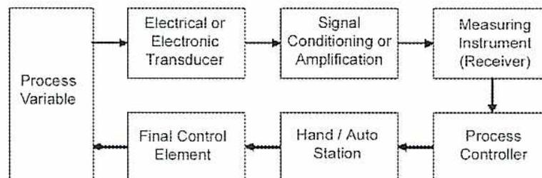
graph LR; PV[Process Variable] --> ET[Electrical or Electronic Transducer]; ET --> SC[Signal Conditioning or Amplification]; SC --> MI[Measuring Instrument Receiver]; MI --> PC[Process Controller]; PC --> HAS[Hand / Auto Station]; HAS --> FCE[Final Control Element]; FCE --> PV;
Figure 1
Control Circuit
This learning objective deals with the measurement of fluid (liquid or gas) pressure, using electro-mechanical or electrical transducers that serve as field devices for a boiler control loop.
Electro-mechanical transducers for fluid pressure measurement use a conventional mechanical pressure sensing element to move an electrical contact which is part of an external circuit with a low applied voltage (10-30 VDC). The sensing element may be a bellows, diaphragm, or Bourdon tube. Transducers are classified by their electrical connections and principles of operation:
Voltage divider transducers use a bellows or diaphragm to reposition a moving contact arm on a potentiometer. This then produces a voltage output that varies in proportion to variation in the sensed pressure. This type of device is often used for indicating and recording mechanisms, such as control room chart recorders, as its voltage-based output does not require amplification.
A variable resistance transducer uses a pressure sensing element to change the transducer's electrical resistance. An external bridge circuit measures the resistance and the resulting signal is utilized to indicate the fluid pressure which was sensed initially. Fig. 2 shows a transducer that uses a bellows as the pressure sensing element. As the fluid pressure changes, it is balanced against spring tension to reposition the bellows which in turn repositions a moving contact on an electrical coil to alter the resistance of the electrical circuit.
Fig. 3 shows a similar device using a diaphragm as the pressure sensing element. A Bourdon tube is used in some variable resistance pressure transducers.
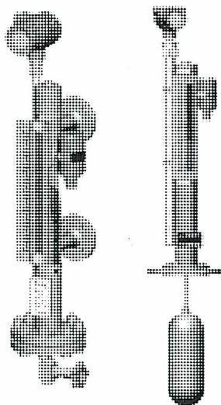
Figure 2
Variable Resistance Transducers
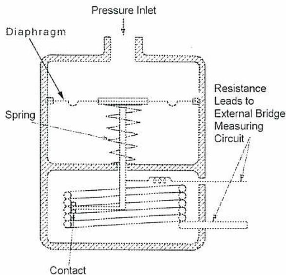
Figure 3
Variable Resistance Transducers
A variable inductance transducer uses the pressure sensing element to reposition a magnetic armature, and this alters the inductance of the surrounding coil. An external bridge circuit measures the inductance, and the resulting signal is used to indicate the fluid pressure sensed initially. Advantages of this type of transducer are that it has no moving electrical contacts to wear out and no distortion of the output signal due to friction between the contact points. A bellows-activated variable inductance transducer is illustrated in Fig. 4.
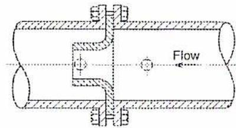
A cross-sectional diagram of a Variable Inductance Transducer. At the top, a "Pressure Inlet" leads into a chamber containing a stack of three "Bellows". A vertical rod extends from the bellows down through a "Spring". This rod is attached to a rectangular "Magnetic Movable Core". The core is positioned within a "Coil" wound around an "Insulated Coil Form". "Coil Leads" extend from the coil to the right side of the housing.
Figure 4
Variable Inductance Transducer
An accurate and sensitive model of the variable inductance transducer is the Linear-Variable Differential Transformer (LVDT) transducer. In place of a conventionally wound coil, the LVDT uses a differential transformer, as shown in Fig. 5.
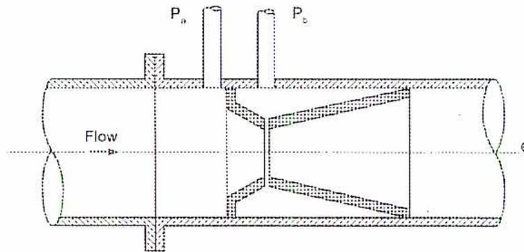
A diagram of an LVDT Transducer. It features a central cylindrical "Core" with a vertical rod extending from the top, labeled "Displacement Input". The core is surrounded by three coils: a "Primary Coil or Input" in the center and two "Secondary Coil or Output" coils on either side (top and bottom). Electrical leads extend from each coil to the left and right.
Figure 5
LVDT Transducer
A differential transformer shown schematically in Fig. 6 has three coils wound onto a central tube. The centre coil is the primary winding of the transformer and the outer two coils are separate secondary windings wound in series-opposition. An axially movable iron armature constitutes the magnetic core between the primary and secondary coils, and the transducer's pressure sensing element positions it. Energizing the primary coil with alternating current induces opposing voltages in the secondary coils. Their net output is zero when the movable core is at its central, balanced, or null position.
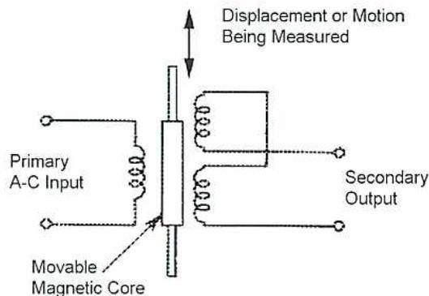
The diagram illustrates a differential transformer. A central vertical core is labeled 'Movable Magnetic Core'. A primary coil is wound around the center of the core, connected to 'Primary A-C Input'. Two secondary coils are wound on the outer sections of the core, connected in series-opposition. Their common connection point is at the center of the core, and their outer terminals are labeled 'Secondary Output'. A vertical double-headed arrow at the top is labeled 'Displacement or Motion Being Measured', indicating the axial movement of the core.
Figure 6
Differential Transformer
As the pressure sensing element repositions the core, the secondary output voltage increases or decreases in proportion to the amount of core displacement. The direction of movement away from the balanced position determines its polarity. External measurement of the polarity and voltage can then be used to indicate the amount of core displacement and the fluid pressure.
Using a servomotor in the external measuring circuit allows the tubular differential transformer used in an LVDT transducer to be very sensitive to changes in pressure (core displacement). This is shown in Fig. 7. In this arrangement, the differential transformer's output is amplified and then connected to one phase of a two phase motor. The two phase motor is used to position the core of another differential transformer called the balancing transformer. The balancing transformer's output is supplied to the amplifier where it opposes the output from the measuring, or input, transformer. The motor rotates until the two transformer's outputs are equal. The motor also positions the indicator on a display device, which indicates the input transformer's core displacement and can be calibrated in units of fluid pressure.
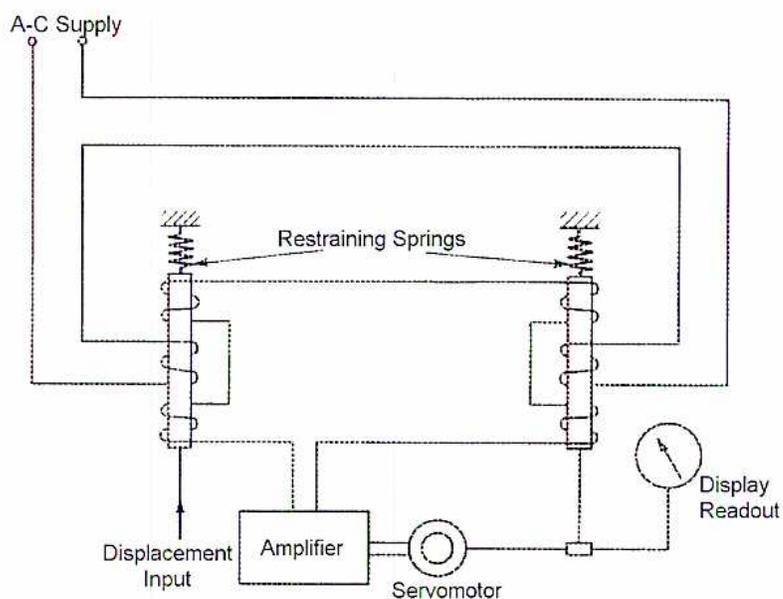
This schematic diagram illustrates a Tubular Differential Transformer system. At the top, an 'A-C Supply' is connected to the primary windings of two vertical transformer coils. A central core, representing the armature, is positioned between these coils and is held in place by 'Restraining Springs'. The secondary windings of the two transformers are connected to an 'Amplifier' block. The 'Displacement Input' is applied to the central core. The output of the amplifier is connected to a 'Servomotor', which in turn is linked to a 'Display Readout' gauge.
Figure 7
Tubular Differential Transformer
Another type of differential transformer for LVDT use is illustrated in Fig. 8. In this design, the transformer windings are on separate legs of an E-shaped magnetic core. The action of the pressure-sensing element causes the armature to pivot around the centre leg. Armature displacement alters the reluctance of the secondary windings relative to each other and changes the balance between their respective outputs. The net output voltage is measured in the same way as for a tubular differential transformer.
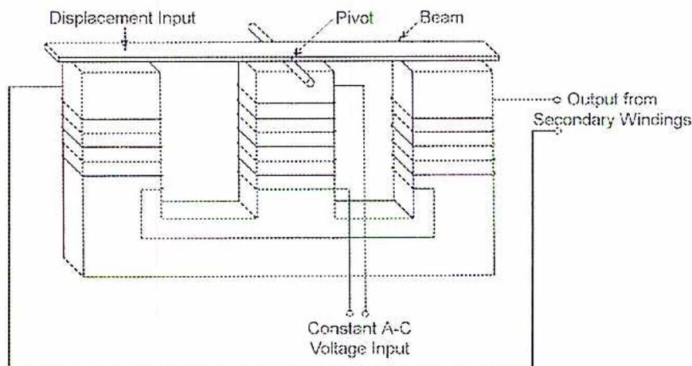
This schematic diagram shows a Differential Transformer with an E-shaped magnetic core. A 'Constant A-C Voltage Input' is applied to the primary winding located on the central leg of the core. A 'Beam' armature is pivoted at a 'Pivot' point on the central leg. 'Displacement Input' is applied to the left end of the beam. The beam's movement changes the magnetic reluctance in the two outer legs. 'Output from Secondary Windings' is taken from windings located on these outer legs.
Figure 8
Differential Transformer
The advantage of an LVDT device over other types of pressure transducers is that it can produce an output signal which has a perfectly linear relationship to the measured variable (fluid pressure.) This greatly reduces the need for any signal conditioning prior
to using the signal to activate an indicating device. This linear relationship is illustrated in Fig. 9.
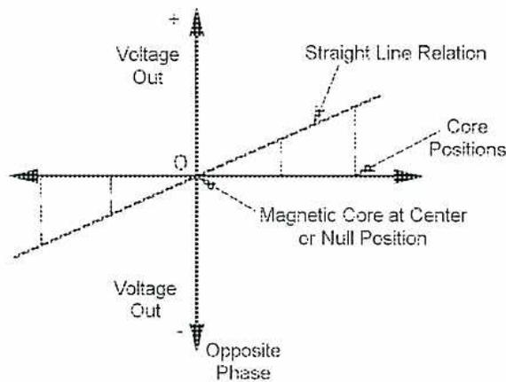
The figure is a Cartesian coordinate system. The vertical axis is labeled 'Voltage Out' at both the top (+) and bottom (-) ends. The horizontal axis has an arrow pointing to the right. A dashed line passes through the origin, which is marked with a '0'. The line is labeled 'Straight Line Relation' in the first quadrant. In the first quadrant, another label 'Core Positions' has a leader line pointing to the dashed line. The origin is labeled 'Magnetic Core at Center or Null Position'. In the third quadrant, the label 'Opposite Phase' has a leader line pointing to the dashed line.
Figure 9
LVDT Output vs. Measured Variable
A variable reluctance transducer is similar to the variable inductance type because it uses the pressure sensing element to reposition a magnetic armature, rather than a magnetic coil. This alters the reluctance of a permanent magnet. An external bridge circuit measures the reluctance, and the resulting signal is utilized to indicate the fluid pressure. This design has the same advantages as the variable inductance type. A further advantage of this type of transducer is that it can utilize an induced voltage and detect changes. This is useful in some circuit designs. This type of transducer, also called a magnetic pickup, is shown in Fig. 10.
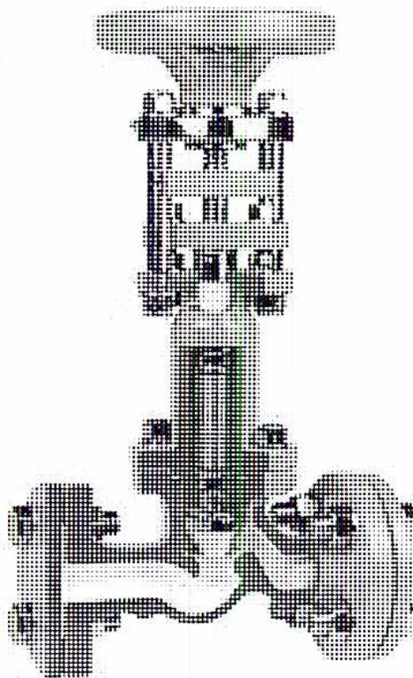
Figure 10
Variable Reluctance Transducer
A variable capacitance transducer uses a diaphragm as the pressure sensing element that deflects in the direction of a fixed plate as the pressure changes. The fixed plate, the diaphragm, and an intervening dielectric material constitute an electrical capacitor. The change in the distance between the diaphragm and the fixed plate alters the capacitance between them. As with other types of electro-mechanical transducers, an external bridge circuit is used to measure the capacitance, and the resulting signal is utilized to indicate the fluid pressure.
The advantages of a variable capacitance transducer are that it has few parts, is inexpensive, and is very sensitive to changes in the measured variable. However, the instrument that receives its signal tends to be more expensive than for other transducers because the required measurement bridge circuit is more complex. Variable capacitance transducers are unsuitable for applications where the lead wires have to be very long because the signal tends to become unreliable. An illustration of this type of transducer is shown in Fig. 11.
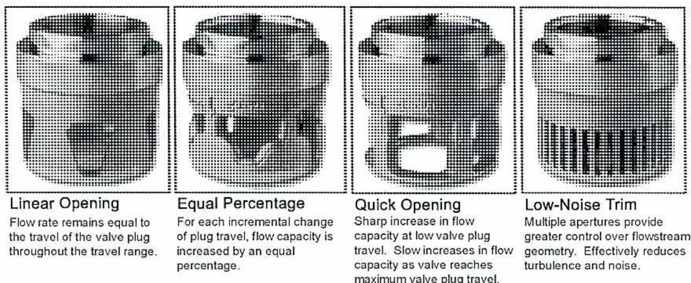
Figure 11
Variable Capacitance Transducer
Another design, with a flatter shape and smaller size requirement, is shown in Fig. 12. This design does not use the diaphragm as a capacitance plate, but instead uses it to cause deflection of one of two separate capacitance plates.
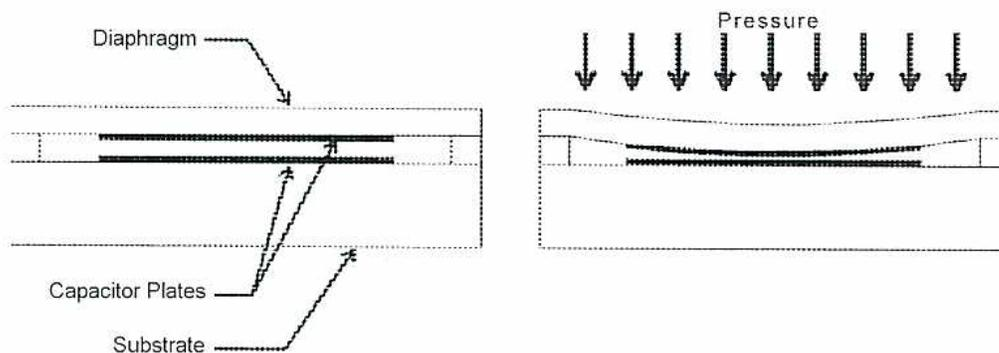
Figure 12
Variable Capacitance Transducer
Fluid pressure transducers use strain gauges to measure the amount of deflection in a pressure sensing element. The simplest form of a strain gauge is a series of loops of fine wire or foil which is mounted on a flexible mounting plate. The plate is firmly fixed in position and placed so that any force applied to it is in the longitudinal direction of the wire loops. This tends to elongate the conductor wire to the maximum length possible. Tensile stress both elongates the wire and reduces its cross-sectional area, while
compressive stress has the opposite effects. The wire's resistance increases with its elongation and decreases with compression because resistance is proportional to the conductor's length and inversely proportional to its cross-sectional area if the temperature is constant.
$$ R = \frac{kL}{A} \qquad \text{(Formula 1)} $$
where \( R \) = electrical resistance
\( k \) = a constant
\( L \) = length of conductor
\( A \) = cross-sectional area of conductor
A small applied voltage and an external Wheatstone bridge circuit can be used to measure the wire's resistance. This measurement can then be used to indicate the strain imposed on the wire. From the strain and the known original wire dimensions, the applied stress is derived, and the strain gauge is used to determine the force applied to the gauge.
Applications of this device include a number of variables that impose a force, such as:
The measuring circuit includes a correction factor for temperature because the current applied to the strain gauge to acquire a measurement increases the wire's temperature, and this alters the resistance slightly. Fig. 13 shows a simple metallic strain gauge, while Fig. 14 illustrates the bridge circuit used to measure its resistance. Temperature correction is achieved by comparing the resistance to that of a dummy gauge of known resistance and temperature.
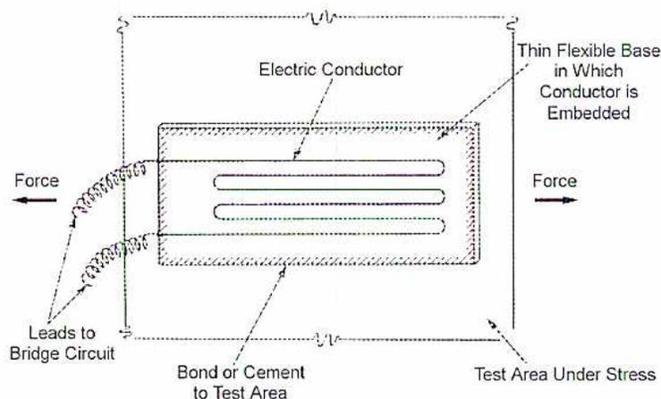
The diagram illustrates a metallic strain gauge. It features a rectangular 'Thin Flexible Base in Which Conductor is Embedded'. Inside this base, an 'Electric Conductor' is shown as a series of horizontal lines. Two arrows labeled 'Force' point outwards from the left and right sides of the gauge, indicating the application of tensile stress. At the bottom left, 'Leads to Bridge Circuit' are shown as two wires extending from the gauge. At the bottom center, a label 'Bond or Cement to Test Area' points to the bottom edge of the gauge. At the bottom right, a label 'Test Area Under Stress' points to the surface where the gauge is mounted.
Figure 13
Strain Gauge
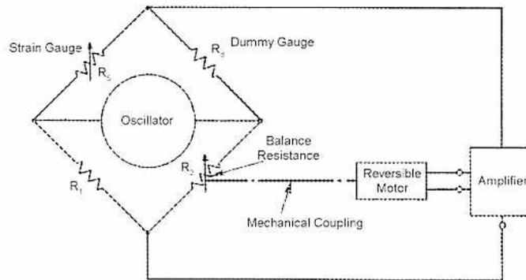
Figure 14
Bridge Circuit
A semiconductor strain gauge, made from silicon, is very accurate and can be used to discern much smaller changes in strain. This is useful in a pressure measuring device such as the one shown in Fig. 15. Two strain gauges are bonded to the opposite sides of a flexible cantilever, so that the vertical motion of the cantilever always places one strain gauge under tension and the other one under compression. A bellows is exposed to the measured fluid pressure. The bellows expands or contracts as the pressure changes repositioning the cantilever.
A single bridge circuit is used to compare the resistance of both strain gauges. The resulting signal indicates the fluid pressure with considerable accuracy. This type of device is suitable for very small changes in pressure in systems operating between 0 kPa and 345 000 kPa.
![Figure 15: Semiconductor Strain Gauge diagram. It shows a cantilever beam fixed to a wall. Two strain gauge elements are bonded to the top and bottom surfaces of the beam. The top strain gauge is connected to a bridge circuit, and the bottom strain gauge is connected to another arm of the bridge circuit. The free end of the cantilever is connected to a bellows unit. The bellows unit is exposed to the pressure under measurement, which causes the cantilever to deflect, changing the resistance of the strain gauges.](cab0834804fb031b43865554cc8d06ab_img.jpg)
Figure 15
Semiconductor Strain Gauge
Piezoelectric transducers operate on the principle that certain crystals, when stressed, generate a voltage that is proportional to the force applied to them. A pressure sensing element can be used to deform a piezoelectric crystal, and the resulting voltage is
measured to indicate the fluid pressure. Crystal materials used include quartz, Rochelle salt, tourmaline, and barium titanate. An example of a piezoelectric transducer for pressure measurement is shown in Fig. 16. Advantages of this type of transducer include:
Disadvantage of this type of transducer include:
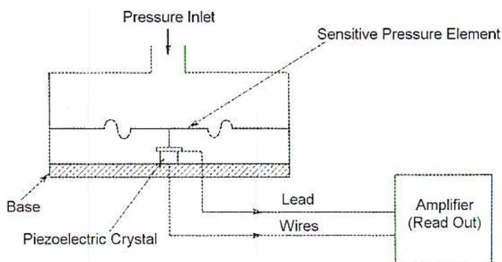
The diagram illustrates the internal structure of a piezoelectric transducer. A 'Pressure Inlet' at the top leads into a chamber where a 'Sensitive Pressure Element' is located. This element is connected to a 'Piezoelectric Crystal', which in turn is mounted on a 'Base'. Two 'Lead Wires' extend from the crystal to an external 'Amplifier (Read Out)' unit.
Figure 16
Piezoelectric Transducer
Modern pressure transducers are designed as compact, self-contained units for the ease of installation in the field, calibration and maintenance after installation. They are typically placed at the end of an impulse line, which is a length of small diameter piping or tubing that is tapped off the piping containing the fluid being measured. The impulse line is kept as short as possible. It is only long enough to protect the transducer from excessive heat and to ensure that it is readily accessible to plant operations and maintenance staff.
The transducer is located close to the fluid pressure connection to which it is attached. If the transducer is measuring pressure within a steam line, a pigtail or some similar seal is incorporated in the impulse line preventing live steam from entering the transducer and damaging it. The output signal from the transducer is directed electrically to the process control devices which may be a considerable distance away in a centralized control room.
Pressure transducers are usually contained in compact cases which feature a standardized male pipe thread at one end for ease of installation in the impulse piping or tubing. The electrical outputs are simple wires which are connected to a signal conditioning unit or amplifier.
It is important that operators have as much information as possible about the operating condition of the equipment under their control. Many pressure transducers are used to provide pressure indications to the control room from each piece of equipment or stage in the process. For example, for a large steam generator, fluid pressures are monitored at the following points:
Describe the design, use, and placement of electrical and electronic temperature measuring devices.
Electrical and electronic transducers are used to measure temperature in a power plant. They include the following:
Metals undergo an increase in electrical resistance when their temperature increases, and a decrease in resistance when the temperature decreases.
If the metals possess the following characteristics, it makes them suitable for using their resistance changes to measure temperature changes in a power plant:
Platinum, nickel, and copper are in common use, and their characteristics are listed in Table 1. A temperature probe using these metals, and based on changes in their resistance, is called a Resistance Temperature Detector (RTD).
Table 1
RTD Metal Qualities
| Metal |
Temperature coefficient of resistance,
\( \Omega/\Omega^\circ\text{C} \) at \( 0^\circ\text{C} \) Range \( 0 - 100^\circ\text{C} \) |
Melting point, \( ^\circ\text{C} \) | Useful Range, \( ^\circ\text{C} \) |
|---|---|---|---|
| Platinum | 0.00392 | 1 773 | -263 to 545 |
| Nickel | 0.0063 to 0.0066 | 1 455 | -190 to 310 |
| Copper | 0.00425 | 1 083 | -40 to 125 |
Temperature changes are monitored using a bridge circuit (Fig. 17). Resistor \( R_3 \) is at ambient temperature and is adjusted to produce zero deflection on the central galvanometer which is calibrated in units of temperature. The external DC power source provides equal voltage drops across resistors \( R_1 \) and \( R_2 \) . Resistor \( R_x \) , the RTD, is contained within a probe which is placed where it is exposed to the process temperature being monitored. Its resistance changes accordingly, causing a current to flow which deflects the galvanometer producing a temperature reading. Alternatively, the changes in RTD resistance can be monitored by electronic control circuits. They incorporate the measured temperature changes into a temperature control loop, or provide temperature correction for control loops, or other type of variable, such as fluid pressure.
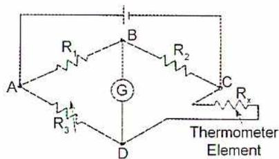
Figure 17
RTD Bridge Circuit
The bridge circuit described is called the deflection method of using an RTD input. Another method used for temperature indications is the null-balance method. In this case, Resistor \( R_3 \) is replaced by a self-balancing potentiometer which maintains a zero voltage in the circuit. A pointer on the potentiometer slide-wire moves across a scale which indicates the amount of potentiometer movement that is required as the RTD temperature changes. The scale is calibrated in units of temperature. This arrangement is shown in Fig. 18. Note that the power supply used is now AC rather than DC, and that a reversible motor is used to adjust the potentiometer. The motor has two sets of opposing windings, supplied respectively by line voltage. The control voltage is determined by the voltage in the bridge circuit. Thus, when the control winding is at a voltage that matches the line voltage, the motor is stationary and the indicated temperature is steady. As the temperature varies the control voltage also varies. The motor is driven in the appropriate direction to re-position the potentiometer and make it self-balancing. This type of potentiometer circuit is used for many types of industrial measuring instruments in addition to temperature measurements.
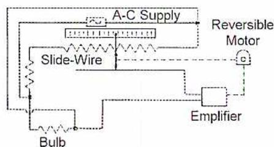
Figure 18
Potentiometer Temperature Measurement
The disadvantage of an RTD is that the total resistance of the resistor and its lead wires is measured, and the lead wire resistance is greater if the probe is placed at a location which is remote from the measuring circuit. The resulting error is corrected using a three-wire system. The balancing resistor is moved from \( R_3 \) and placed between \( R_1 \) and \( R_2 \) , so that the probe and Resistor \( R_x \) are connected to the circuit by three wires instead of two. This is shown in Fig. 19.
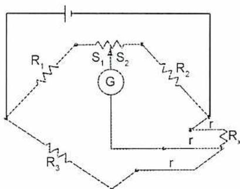
Figure 19
Three-Wire System
A modification of this concept is the four-wire system in which a loop of wire is run to the location of \( R_x \) which provides a reference resistance which matches the leads to and from \( R_x \) . This is shown in Fig. 20.
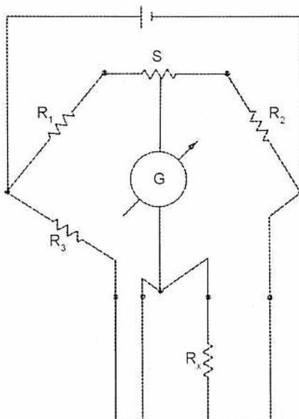
Figure 20
Four-Wire System
Resistance Temperature Detectors are extremely accurate. A platinum RTD is often used as the standard against which other types of temperature measuring devices are compared and calibrated. If the material measured contaminates the probe, its accuracy is reduced. RTD's are usually contained within a thermowell or similar sheath which is inserted into a gas or liquid stream. The well is often seal welded or flanged into a threaded opening in the fluid piping. The use of the thermowell increases the probes response time to temperature variations making resistance devices slower to respond than other types of temperature measurements.
Another type of resistance-based measuring device is the thermistor which is a semiconductor material of which electrical resistance changes with its absolute temperature. Unlike metals, a thermistor material has a decrease in resistance as temperature increases and an increase in resistance as temperature decreases. Thermistors are used to measure circuits similar to those of RTD's. They are extremely accurate in the range of \( -100^{\circ}\text{C} \) to \( 400^{\circ}\text{C} \) because their resistance changes exponentially with temperature changes, so it is easy to detect and measure the changes.
Thermistors require more complex measuring circuits than metal probes do because their relationship between resistance and temperature is not linear. An advantage of thermistors is they can be moulded into a variety of convenient shapes to fit the equipment they are required to monitor. Because they have a high resistance, the lead wire resistance is not usually a significant factor. Overall, thermistors are compact, low cost, reliable, and accurate devices but have a limited temperature range.
A thermocouple is a thermoelectric device, meaning that it uses thermal energy to generate an electrical potential. The principle used is that two dissimilar metal wires are kept separated except for their ends which are joined together to form two junctions. If one junction is heated, an electrical potential is generated which produces a measurable current flow in the wires. The voltage is linearly proportional to the difference in temperature between the hot junction and the cold, or reference, junction. The basic arrangement is shown in Fig. 21.
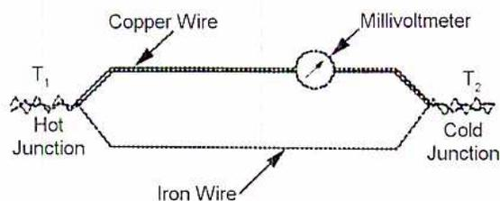
Figure 21
Thermocouple
The voltage produced is measured in a bridge circuit to indicate the hot junction temperature, and a self-balancing null-balance potentiometer circuit is often used for this purpose. Alternatively, the voltage generated is used to deflect the pointer of a
galvanometer across a scale which is calibrated in units of temperature. The voltage can be utilized directly in a digital control circuit which either controls a process temperature or requires temperature compensation for some other measured variable.
There are seven combinations of wires used, and they are classified as types B, E, J, K, R, S, and T. Their characteristics are shown in Table 2. Note that Constantan, Chromel, and Alumel are commercial names for proprietary alloys used for thermocouples.
Table 2
Thermocouple Types
| Type | First Wire | Second Wire | Useful Range, °C |
|---|---|---|---|
| B | Platinum, 30% Rhodium | Platinum, 6% Rhodium | 0 to 1860 |
| E | Nickel, 10% Chromium | Constantan (copper-nickel) | -180 to 980 |
| J | Iron | Constantan | -0 to 815 |
| K | Chromel (nickel-copper) | Alumel (nickel-aluminum) | -180 to 1260 |
| R | Platinum, 13% Rhodium | Platinum | -45 to 1650 |
| S | Platinum, 10% Rhodium | Platinum | -45 to 1760 |
| T | Copper | Constantan | -180 to 980 |
Thermocouple junctions are delicate, prone to damage from overheating, flame impingement, chemical corrosion, or mechanical action. Therefore, like RTD's, they are usually contained within a thermowell which is inserted into a gas or liquid stream. The use of the thermowell decreases the response time of the probe to temperature variations. Fig. 22 illustrates a typical thermocouple installation where ceramic insulators in a thermowell protect the thermocouple.
![Diagram of a thermocouple installation. On the left, a 'Temperature Indicator, Recorder or Controller' is shown with a dial and needle. A 'Compensating Cable' connects this unit to a 'Terminal Head'. The 'Terminal Head' is mounted on an 'Adjustable Flange' which secures it to a 'Tue, Pocket or Well'. Inside the 'Tue, Pocket or Well', the thermocouple wires are protected by 'Ceramic Insulators'. The 'Immersion Length' of the thermocouple inside the well is indicated. The 'Tip of Thermocouple' is at the bottom of the well.](a24e89a6fe9bb70c83f8bf5202baba95_img.jpg)
Figure 22
Thermocouple Installation
Another way to protect thermocouples in a harsh environment is to use sheathed-type thermocouples with magnesium oxide insulation and a stainless steel sheath for protection. This increases the response time of the thermocouple to temperature changes, but grounding the thermocouple to the sheath can partially offset the longer response time. Grounded and nongrounded thermocouples are illustrated in Fig. 23.
![Figure 23: Cross-sectional diagrams of Grounded and Nongrounded Thermocouples. The top diagram, labeled 'Grounded Type', shows a 'Thermocouple Lead Wires' entering a 'Steel Sheath' filled with 'Packed Insulation'. The wires are connected to a 'Thermocouple Junction' at the tip, which is in direct contact with the sheath. The bottom diagram, labeled 'Nongrounded Type', shows a similar construction, but the 'Thermocouple Junction' is isolated from the 'Steel Sheath' by an additional layer of insulation.](ef96fcba3a34e9e35ff8ee3cc8cb7b20_img.jpg)
Figure 23
Grounded and Nongrounded Thermocouples
Sheathed thermocouples are well suited for temperature measurement of the metal in boiler pressure parts when the thermocouple is attached to a pad welded to the boiler metal and covered with protective insulation. This is illustrated in Fig. 24.
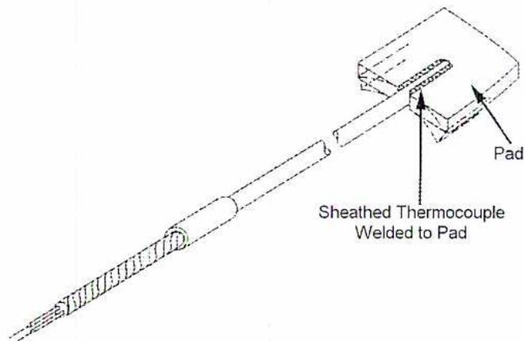
Figure 24
Sheathed Thermocouple
Advantages of thermocouples are:
Disadvantages of thermocouples are:
Heat energy is radiated from a body at a given temperature to another body at a lower temperature and emissivity (E) determines the flow rate.
$$ E = \frac{\text{Total radiation from a non - blackbody}}{\text{Total radiation from a blackbody}} \quad (\text{Formula 2}) $$
A blackbody is a theoretical body which is a perfect absorber and radiator of energy. That is, it absorbs all heat radiation that reaches it, and radiates all energy that it contains.
According to the Stefan-Boltzmann Law:
$$ E = \delta T^4 \quad (\text{Formula 3}) $$
where E = emissivity of the hotter body, J/s/cm 2
\( \delta \) = Stefan's Constant = \( 5.77 \times 10^{-8} \) J/s/cm 2 /°K 4
T = absolute temperature of emitting surface, °K
The amount of energy radiated in a given time can therefore be found using Formula 4:
$$ Q = A \delta \Sigma (T_1^4 - T_2^4) \quad (\text{Formula 4}) $$
Where Q = heat flow, J/s
A = area of emitting surface, cm 2
\( \delta \) = Stefan's Constant
\( \Sigma \) = Emissivity Factor; a constant to allow for the fact that a perfect blackbody does not exist
\( T_1 \) = absolute temperature of emitting surface, K
\( T_2 \) = absolute temperature of receiving surface, K
Temperature sensing devices measure temperatures based on the calculation in Formula 3 where the receiving surface is the instrument itself. This technology is often used in
portable, hand-held pyrometers which are used to determine the temperature of a surface which is not continuously monitored by any temperature-sensitive devices. Total-radiation pyrometers are responsive to all wavelengths of radiation. The disadvantage of total-radiation pyrometers are that they are subject to errors due to heat energy contained in gases, water vapour, or particulate material located between the instrument and its measured surface. A total-radiation pyrometer is illustrated in Fig. 25.
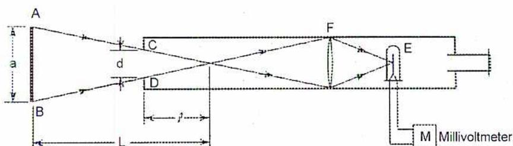
Figure 25
Total-Radiation Pyrometer
AB represents the body whose temperature is measured, and radiation from this source is admitted to the pyrometer through an aperture at CD. It is focused by lens F onto a blackened platinum disk E. Thermocouples on the disk, in sufficient quantity to produce a usable voltage, measure the change in temperature due to the absorbed radiation. The resulting voltage is indicated on the millivoltmeter which is calibrated in units of temperature. An alternative arrangement, shown in Fig. 26, uses a concave mirror G rather than a lens to focus the radiated energy which eliminates errors caused when the lens absorbs energy at certain wavelengths.
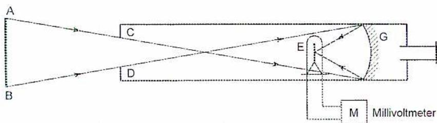
Figure 26
Total-Radiation Pyrometer with Mirror
Optical pyrometers are more selective because they are only responsive to specific wavelengths in the range of visible light. A body's colour changes wavelength as its temperature increases. This complicates the process. Table 3 shows some colour/temperature correlations for wavelengths from 6500 to 4500 angstroms (1 angstrom = \( 10^{-8} \) cm.)
Table 3
Colour/Temperature Relationships
| Colour | Temperature, °C |
|---|---|
| Incipient red | 500 - 550 |
| Dark red | 650 - 750 |
| Bright red | 850 - 950 |
| Yellowish red | 1050 - 1150 |
| Incipient white | 1250 - 1350 |
| White | 1450 - 1550 |
An optical pyrometer, shown in Fig. 27, receives radiant energy that lens CD focuses onto Lamp E. Lamp E is viewed through a red optical filter and focusable eyepiece F. A current from Battery G heats the lamp and the milliammeter shows the current flow and calibrates in units of temperature. A person looking through the eyepiece sees a geometric shape representing the radiation source with the lamp filament at its centre. Variable Resistance R is manually adjusted to alter the lamp's intensity. This adjusts the indicated temperature reading until the radiation brightness is a match for the filament brightness.
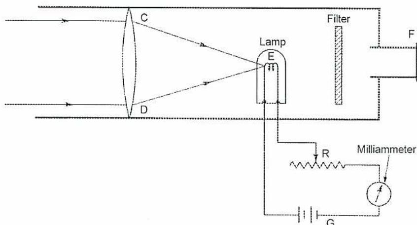
Figure 27
Optical Pyrometer
Fig. 28 illustrates the lamp filament of an optical pyrometer in different circumstances. If the filament is brighter than the source, it will look like (c), and if it is darker than the source, it will look like (a.) When the pyrometer is accurately adjusted, it will be like (b.) This type of instrument is also called a disappearing-filament pyrometer.
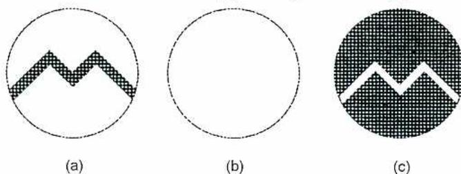
Figure 28
Pyrometer Lamp Filaments
Partial-radiation pyrometers are similar to total-radiation pyrometers, but they are sensitive to only a small band of wavelengths or to a single wavelength of radiated energy. They utilize a photocell in place of the blackened platinum disk and thermocouples. The energy focused onto the photocell causes it to generate a measurable electrical current which is used to show the temperature of the radiating body.
Partial-radiation pyrometers are particularly useful for high temperatures, in the range of 1063°C to 2000°C, which require single wavelength (monochromatic) measurement. Advantages of partial-radiation pyrometers at high temperatures are their rapid speed of response, reduced errors due to fluctuations in emissivity, and little or no error due to intervening smoke or gases. A disadvantage is sensitivity to fluctuations in ambient temperature which often requires a water jacket for cooling the pyrometer.
A special application of thermocouples in a power plant is the High Velocity Thermocouple (HVT) which is designed to measure furnace gas temperatures with reduced errors due to heat radiation effects. The HVT is a high temperature thermocouple contained within a protective shield inserted into the gas stream. Shield designs are shown in Fig. 29, along with a design for a multiple shield HVT. The shielding may be cooled by a stream of compressed air that is directed through it, or it may have a cooling water jacket on the portion that is external to the gas stream. This protects the thermocouple and shielding improving its accuracy.
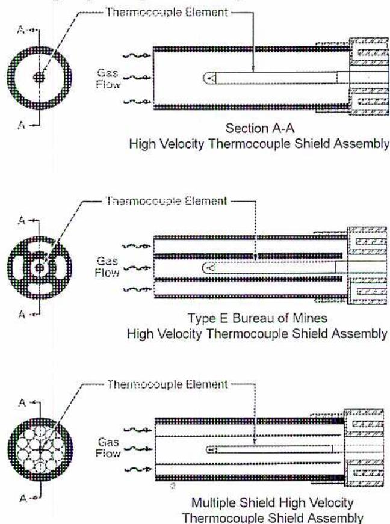
Thermocouple Element
Gas Flow
Section A-A
High Velocity Thermocouple Shield Assembly
Thermocouple Element
Gas Flow
Type E Bureau of Mines
High Velocity Thermocouple Shield Assembly
Thermocouple Element
Gas Flow
Multiple Shield High Velocity
Thermocouple Shield Assembly
Figure 29
High Velocity Thermocouple
Temperature transducers are used in many locations in power plants. Their output signals are directed electrically to the indicating instruments and process control devices which may be a considerable distance away in a centralized control room. As with pressure transducers, temperature transducers may contain electronic equipment that converts the output signal to a digital data stream which the process computers or controllers can use directly. In this case, the output connections are a standardized RS-232 interface cable or similar proprietary digital data cable.
Monitoring the average temperature of a piece of equipment, such as a motor winding or boiler drum is often required. In this case, a number of temperature measurements are taken in parallel, using RTD's or thermocouples. The process control equipment or computerized data acquisition system averages the temperature measurements.
Another common scenario is the need to monitor a number of temperatures through one instrument using multiple thermocouples at different locations. Connecting the thermocouples' lead wires to a conveniently located zone box using a common reference junction achieves this economically. Ordinary copper wiring is used to direct the electrical signals from the zone box to the measuring instrument. A selector switch is used so one measurement at a time is displayed, as illustrated in Fig. 30.
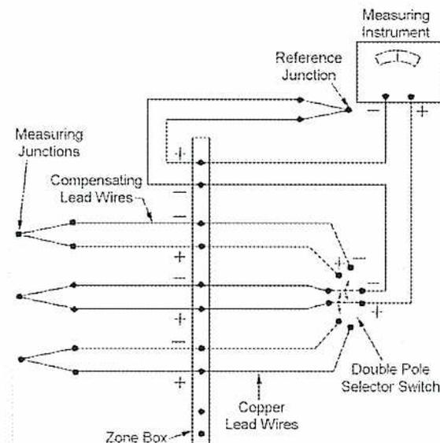
Figure 30
Thermocouple Selector Switch
Portable pyrometers are used extensively to confirm the readings from field devices and to monitor areas or equipment which is experiencing temperature problems. Examples of this are overheating bearings or other moving parts, process upsets, or equipment exposed to hot or cold ambient temperatures. However, they are most accurate at temperatures above 538°C. Optical pyrometers are especially useful at temperatures in excess of 816°C, such as for monitoring furnace internal temperatures.
An important principle to remember when placing temperature sensing devices is Prévost's theory of heat and radiation exchange. This states, among other things, that each body in a system both radiates and absorbs heat energy continuously. This produces a net flow of heat in one direction until temperature equilibrium is reached with all of the bodies in the system. A temperature sensing device absorbs heat from the object or stream which it is measuring, but also radiates heat to other bodies in the vicinity which are cooler.
The indicated temperature measurement is lower than the actual temperature. For example, a thermocouple in a boiler flue gas stream may read a lower temperature than the actual flue gas possesses because the thermocouple radiates some of its heat energy to the cooler furnace walls nearby. For this reason, temperature sensing devices are placed carefully to avoid inaccuracies due to their own radiation of heat.
Describe the design, use, and placement of Venturi tubes, orifice plates, flow nozzles, and Pitot tubes.
The measurement of fluid flow is critical to the instrumentation and control functions in a power plant. Most power plant flowmeters are of the head type, meaning that they indicate a flow rate derived from a direct measurement of differential pressure. Differential pressure refers to the difference in pressures between two locations in the fluid stream, also called the head difference. The relationship between differential pressure and fluid velocity is shown in Bernoulli's Theory (Formula 5). The total head \( H \) , in this case, refers to the difference in head, or pressure, between two points. Once the fluid velocity is found, the fluid flow rate is calculated using Formula 6.
$$ H = h + \frac{P}{w} + \frac{v^2}{2g} \quad (\text{Formula 5}) $$
Where \( H \) = total head, metres
\( h \) = height above datum level ( \( = 0 \) in this case)
\( P \) = pressure, Pa
\( w \) = force of gravity on \( 1 \text{ m}^3 \) of fluid in N
\( v \) = fluid velocity, m/s
\( g \) = \( 9.81 \text{ m/s}^2 \)
$$ Q = Av \quad (\text{Formula 6}) $$
Where \( Q \) = fluid flow
\( A \) = cross sectional area
\( v \) = velocity of flow
For flowmeter use, two locations in the fluid piping or ducting are tapped for fluid pressure impulse lines with one tap on either side of a pipe which creates a differential pressure itself by constricting the fluid flow path. The venturi principle indicates that fluids in a converging stream gain velocity, but their pressure is reduced. The reverse occurs as the stream diverges. The two taps are placed as close together as possible to minimize pressure losses due to friction. The two pressures are then piped to an instrument which measures the pressure difference and uses this measurement to indicate the rate of fluid flow.
The equipment designs discussed in this learning objective are applicable to all types of fluid flow measurement. However, it is assumed for calculations throughout this discussion that the working fluid is non-compressible. If compressible gases and vapours are being measured, then Formulas 5 and 6 no longer apply without applying a compressibility factor. The factor's value is a function of the:
Additional correction factors are needed if there is a significant amount of moisture in the gas, or if the gas is used under cryogenic conditions ( i.e. low temperatures and high pressures that cause the gas to no longer follow the ideal gas laws.)
The Venturi tube is a commonly used flow measurement device. It consists of a convergent-divergent tube placed in the flow path with flow calculated from measurement of the differential pressure between the tube's inlet and its throat. Fig. 31 shows a Venturi tube attached to a U-tube manometer to indicate the differential pressure of a stream of water.
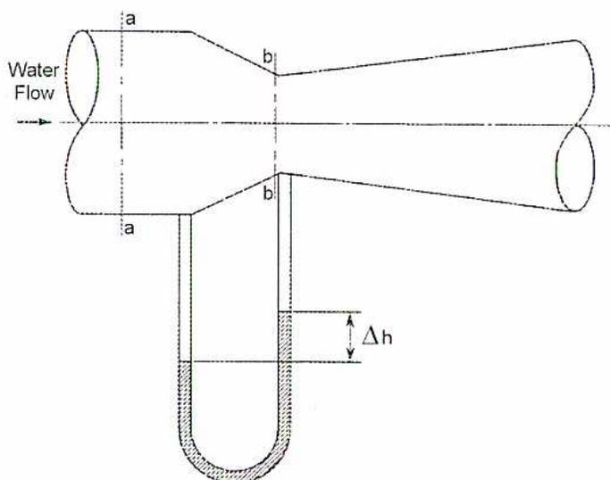
Figure 31
Venturi and U-Tube
Calculation of flow is based on the Equation of Continuity, shown here as Formula 7 (which is derived from Formula 6.)
$$ Q = A_a v_a = A_b v_b \quad (\text{Formula 7}) $$
Where \( Q \) = fluid flow
\( A \) = cross sectional area
\( v \) = velocity of flow
$$ v_a = \frac{A_b}{A_a} v_b = \left( \frac{d_b}{d_a} \right)^2 v_b \quad (\text{Formula 8}) $$
Where
\(
d_a
\)
= internal piping diameter at a-a
\(
d_b
\)
= throat diameter at b-b
In practice, fluid friction causes a pressure drop by itself, and the flow calculation is multiplied by a Coefficient of Discharge to correct for the frictional effect. The Coefficient of Discharge depends on the design of specific Venturi tubes, but a typical value is 0.97. Venturi tubes are available in standard dimensions, listed in international and ASME standards, and the Coefficient of Discharge of a standard Venturi tube is easily obtained.
An orifice plate is a thin metal plate which is inserted into a run of piping and placed between two successive lengths of piping at a flanged joint. An orifice in the plate allows fluid to pass through but restricts the flow to create a pressure drop and measurable differential pressure. Fig. 32 shows some common designs of orifice plates, while Fig. 33 shows an installation in flanged pipe with several tap points that illustrate the changes in fluid pressure as the flow progresses through the constriction.
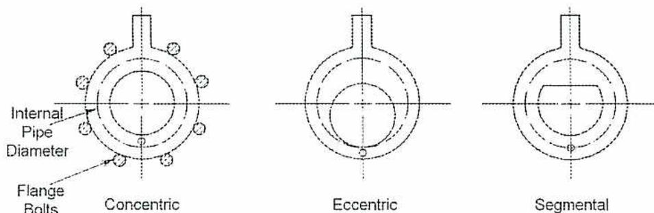
Figure 32
Orifice Plates
Orifices are bevelled so that their downstream diameter is slightly greater than their upstream diameter. This provides a diverging effect for the fluid stream and also minimizes wear on the orifice.
![Diagram of an orifice installation in a pipe. The pipe has a diameter D. Flow is from left to right, labeled 'Upstream' and 'Downstream'. An orifice plate is installed in the pipe. Static pressure taps are shown as glass tubes. Tap 1 is located in the upstream pipe. Taps 2, 3, 4, 5, 6, and 7 are located at various points downstream of the orifice, with tap 7 being at the vena contracta. Tap 11 is located in the downstream pipe. The diagram shows the pressure levels at these points relative to the flow.](5f18c728fc511750ffcaa626716b920e_img.jpg)
Figure 33
Orifice Installation
Using Bernoulli's Theory and the Equation of Continuity, the following formula was derived to determine flow rate from an orifice plate:
$$ Q = \frac{\pi d_b^2}{4} K \sqrt{\frac{2g}{w} (p_a - p_b)} \quad (\text{Formula 9}) $$
Where \( Q \) = fluid flow
\( d_b \) = diameter of the narrowest point of flow downstream of the orifice (the vena contracta)
\( K \) = flow coefficient = \( \frac{C}{\sqrt{1 - \beta^4}} \)
\( C \) = Coefficient of Discharge for the orifice design
\( \beta = \frac{d_b}{d_a} \)
\( d_a \) = internal diameter of the pipe upstream of the orifice
\( g = 9.81 \text{ m/s}^2 \)
\( w \) = force of gravity on \( 1 \text{ m}^3 \) of fluid
\( p_a \) = static pressure in the pipe upstream of the orifice
\( p_b \) = static pressure in the pipe at the vena contracta
The value of \( d_b \) cannot be practically determined, and the exact location of the vena contracta varies with changing flow rates. The vena contracta is the diameter of the narrowest point of flow downstream of the orifice. Using orifices of specified dimensions with specified locations for the pressure taps, based on ASME and other accepted standards, offsets this shortcoming.
Generally, taps are positioned in three different combinations of locations:
Advantages of an orifice plate are:
Disadvantage of an orifice plate is:
Some of the pressure drop is recovered at a distance of 4 – 8 pipe diameters downstream, as the fluid flow regains a laminar pattern, but the amount of the orifice differential pressure which is permanently lost is often 65% or more.
There are orifice plate designs which minimize the pressure drop experienced across them. Fig. 34 illustrates two such designs. The design shown in (a) is a Dall short insert tube which uses two pieces that produce a Venturi-like internal shape. This produces a very low pressure drop relative to other designs, but it is susceptible to clogging if there is particulate matter contained within the working fluid. The design shown in (b) is an orifice plate which has a rounded leading edge and oversized trailing edge and is called a quarter-circle orifice plate . It is particularly useful when the working fluid is very viscous.
![Figure 34: Orifices. (a) Dall short insert tube: A 3D perspective view of a pipe section with a Dall short insert tube installed. The tube consists of two concentric, flared pieces that create a Venturi-like shape. (b) Quarter-circle orifice plate: A cross-sectional view of a pipe showing a quarter-circle orifice plate. The plate has a rounded leading edge with radius 'r' and a thickness 'T'. The pipe diameter is 'd'. The distance from the leading edge to the start of the oversized trailing edge is labeled 'P'. The total length of the plate is indicated as ≥ 1.5 d. An arrow indicates the 'Direction of Flow' from left to right.](0fd25e7fd1bbb3a7e2e304fc28a8496b_img.jpg)
Figure 34
Orifices
A flow nozzle is a differential pressure measuring element which is a compromise design between a Venturi tube and an orifice plate. It has the curved form of a Venturi tube avoiding the abrupt constriction of an orifice plate and the resulting large, permanent pressure drop. It is intermediate between the other two choices in terms of cost. Fig. 35 shows an example of a flow nozzle. The pressure taps are usually at the nozzle outlet and one pipe diameter upstream.
Figure 35
Flow Nozzle
A variation of the ordinary flow nozzle is the Dall tube, which is similar in concept to the Dall short insert tube. It uses two separate convergent and divergent pieces that produce a Venturi-like internal shape with a small size and excellent downstream recovery of the pressure drop. The downstream pressure tap is located at the gap between the two pieces of the tube. The tube is unsuitable for use when particulate matter in the fluid stream may plug it off. A Dall tube is shown in Fig. 36.
Figure 36
Dall Tube
Another flow nozzle design which captures some of the inherent flow advantages of the Venturi tube is the Gentile flow tube, illustrated in Fig. 37. A key element of this design is the placement of the pressure taps which are in line with the direction of flow rather than being perpendicular to it. This serves to minimize the resulting pressure drop and turbulence.
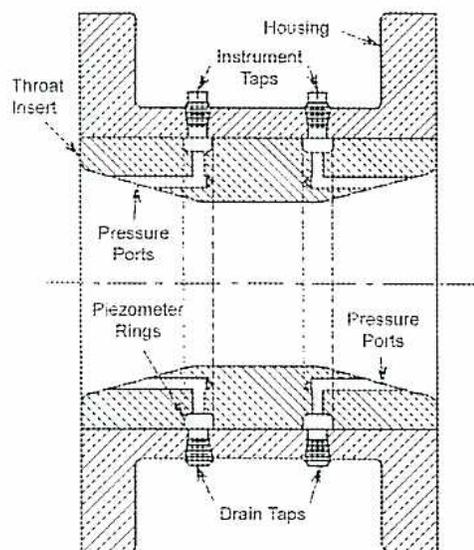
Figure 37
Gentile Flow Tube
A Pitot tube arrangement for differential pressure measurement consists of two tubes placed into the fluid stream and connected to a differential pressure measuring instrument. One tube has a small opening that faces directly into the fluid flow. Fluid velocity at the opening is zero because all of the velocity energy, or velocity head, is converted to pressure head at the opening. Therefore, the pressure sensed is entirely due to a combination of fluid velocity and static pressure. The second tube is connected at a right angle to the flow, so that it is exposed to static pressure only. This is shown in Fig. 38.
![Figure 38: Pitot Tubes. A diagram showing a Pitot tube assembly in a pipe. The 'Static Pressure Connection' is connected to a 'Senistive Differential Pressure Gauge'. The 'Impact or Dynamic Pressure Connection' is connected to the same gauge. The static pressure connection is located at a 'Pressure Tight Gland' on the pipe wall, labeled with static pressure <math>P_s</math>. The impact connection is located at an 'Impact Hole' in the pipe wall, labeled with impact hole pressure <math>P_b</math>. The flow direction is indicated by an arrow labeled 'Flow'.](0872c27ab0a48c6e88ef4f09f773872f_img.jpg)
Figure 38
Pitot Tubes
The difference in sensed pressure between the two tubes is attributable to fluid velocity which is calculated using Formula 10. When fluid velocity is determined, it can be used in conjunction with the pipe or duct cross-sectional area to calculate the fluid flow rate, using the Equation of Continuity (Formula 7.)
$$ V_a = k(p_b - p_a) \quad (\text{Formula 10}) $$
Where \( k \) is a constant that is specific to the Pitot tube design.
Fig. 39 illustrates a Pitot tube arrangement with two concentric tubes. Static pressure is admitted to the outer tube through holes in the side of the tube, and the concentric chamber between the tubes is exposed to the static fluid pressure. This arrangement ensures that the two measurements are taken from points close together, for maximum accuracy, and requires only one opening in the piping or ductwork. Pitot tubes are often used for gas flow measurement, and this concentric design is commonly used in flow measurement in air ducts.
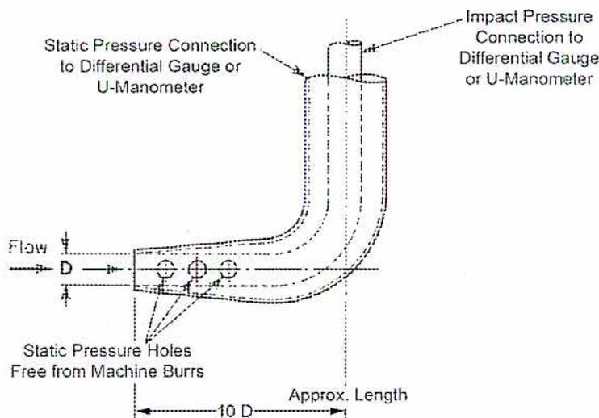
The diagram illustrates a concentric Pitot tube assembly inserted into a pipe. The inner tube is bent into an L-shape at the tip to measure impact pressure. The outer tube has static pressure holes near the tip. Connections extend from the rear of the tubes to a differential gauge or U-manometer. Labels include: 'Static Pressure Connection to Differential Gauge or U-Manometer', 'Impact Pressure Connection to Differential Gauge or U-Manometer', 'Flow', 'D' (pipe diameter), 'Static Pressure Holes Free from Machine Burrs', 'Approx. Length', and '10 D' (distance from tip to static holes).
Figure 39
Concentric Pitot Tubes
Advantages of pitot tubes are:
A disadvantage is that they measure velocity from only a single point in the fluid stream, which probably has varying velocities at different locations in its cross-section. Moving the pitot tubes across the fluid flow path to get a series of readings or having multiple sets of pitot tubes at different locations in the pipe or duct cross-section overcomes this concern. In either event, the different readings that result are averaged together. Obtaining the correct weighting of the readings when calculating the average, can become quite complex. Fig. 40 shows an installation of averaging pitot tubes for air flow measurement using multiple openings in each tube to obtain averaged readings.
Pitot tubes are frequently used for portable instruments intended to confirm the readings of field instruments for calibration and verification purposes although they also appear as permanently installed field devices. They are much more common for gas flow measurement than for use with liquids. Care is taken to ensure that particulate matter or other contaminants in the fluid stream do not block the tube openings. This may require that provision is made for periodic, routine cleaning.
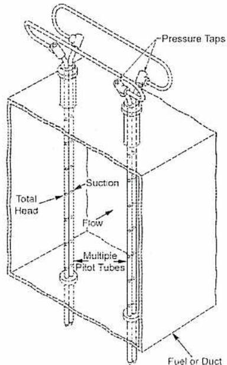
A 3D perspective diagram of an averaging Pitot tube assembly installed in a rectangular duct. The assembly consists of two vertical tubes passing through the duct. The left tube is labeled 'Total Head' and has a single opening at the front face of the duct. The right tube is labeled 'Suction' and has multiple openings along its length, labeled 'Multiple Pitot Tubes'. Both tubes extend to the top of the duct, where they are connected to a common header pipe. This header pipe has two outlets at the top, labeled 'Pressure Taps'. An arrow labeled 'Flow' indicates the direction of fluid movement from left to right within the duct. The entire assembly is labeled 'Fuel or Duct' at the bottom right.
Figure 40
Averaging Pitot Tubes
Most flow measuring elements require a minimum length of straight run piping both upstream and downstream of the measurement point, to ensure that the fluid flow has a minimum of turbulence prior to measurement. This ensures that any turbulence the meter causes can be smoothed out downstream of the meter. The metering element cannot be located at or near any bends or curves in the piping. This requirement is especially true for pitot tubes and orifice plates. Including straightening vanes in the internal design of the piping or ductwork overcomes this limitation to some degree although this is only done effectively with a gas stream rather than a liquid flow.
Fluid flow measurements are required in many locations in power plants. Their output signals are directed electrically to the indicating instruments and process control devices which may be a considerable distance away in a centralized control room or remote building.
For the purpose of gas flow measurement in a power plant, there are some applications where flow can be indicated from differential pressure without having to have a differential pressure sensing element installed. Example is gas flow measurement across
an economizer or air preheater, where the equipment itself produces a pressure drop that can be utilized to calculate flow rates.
It is important to ensure that the taps for pressure sensing for a flowmeter are installed at the appropriate location and depth in the fluid stream, following the flowmeter manufacturer's directions and any applicable standards or codes. To ensure that scale, condensation, or other contaminants do not obstruct the taps, they are not installed at the bottom of a pipe. For gas applications, taps are located on top of the pipe, and for liquid or steam, they are located on the side of the pipe. After tap holes are drilled, it is important to remove all burrs and round all edges inside the pipe to ensure unobstructed exposure to the working fluid being measured.
Selection of the most appropriate primary sensing element for differential pressure is very important. Table 4 summarizes the advantages and disadvantages of each type.
Table 4
Primary Element Advantages and Disadvantages
| Primary Elements | |
|---|---|
| Advantages | Disadvantages |
| Orifice | |
|
1. Lowest cost
2. Easily installed and/or replaced 3. Well established Coefficient of Discharge 4. Do not wiredraw or wear in service during test period 5. Sharp edge will not foul with scale or other suspended matter |
1. High nonrecoverable head loss
2. Suspended matter may build up at the inlet side of horizontally installed pipe, unless eccentric or segmental types of orifices are used with the hole flush with the bottom of the pipe 3. Low capacity 4. Requires pipeline flanges |
| Flow Nozzle | |
|
1. Can be used where no pipeline flanges exist
2. Costs less than venturi tubes and capable of handling same capacities |
1. Higher cost than orifice
2. Same head loss as orifice for same capacity |
| Venturi Tube | |
|
1. Lowest head loss
2. Has integral pressure connections 3. Requires shortest length of straight pipe on inlet side 4. Does not obstruct flow of suspended matter 5. Can be used where no pipeline flanges exist 6. Well established coefficient of discharge |
1. Highest cost
2. Greatest weight and largest size for a given size of line |
Describe the design and use of: manometers, ring balance, force balance, and electric flow indicating mechanisms.
A manometer is a U-shaped hollow tube, usually made of glass, with each column, or leg, of the tube connected to a different pressure tap. The legs may both be vertical, or one may be angled to obtain a longer scale and more accurate reading. A sealing liquid, usually water, oil, or mercury, is contained within the tube. The high pressure connection tends to force the liquid level down in one leg, and the displaced liquid flows to the low pressure leg where the level rises. The differential pressure between the two legs determines the equilibrium, and the difference in liquid levels between the two legs is a direct indication of the differential pressure. A scale mounted between the two legs enables the liquid level difference to be determined. This is a simple, accurate and economical means of measuring the difference between two pressures. Sealing the end of the opposite leg and evacuating the air contained within it is a method often used to provide an indication of a single pressure or vacuum connection. The two pressure connections of a differential pressure primary element can also be compared in a manometer to acquire an indicated reading of fluid flow rate. The basic layout of a U-tube manometer used for fluid flow measurement is shown in Fig. 41.
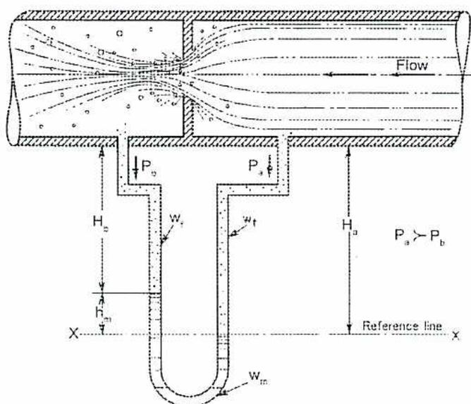
The diagram illustrates a U-tube manometer connected to a flow element, such as an orifice plate, within a pipe. The pipe contains a fluid with density \( w_f \) flowing from left to right, as indicated by the 'Flow' arrow. The flow element creates a pressure drop, with the upstream pressure labeled \( P_a \) and the downstream pressure labeled \( P_b \) . The U-tube manometer is connected to these two points. The manometer contains a sealing liquid with density \( w_m \) . The left leg of the U-tube is connected to the upstream pressure tap, and the right leg is connected to the downstream pressure tap. The liquid level in the left leg is higher than in the right leg. The vertical distance from a common 'Reference line X' to the centerline of the pipe is labeled \( H_a \) . The vertical distance from the reference line to the interface of the two liquids in the left leg is labeled \( H_s \) . The vertical distance from the reference line to the interface of the two liquids in the right leg is labeled \( H_d \) . The difference in liquid levels between the two legs is labeled \( h_m \) . The diagram also shows the pressure taps and the flow lines around the flow element. A note indicates \( P_a > P_b \) .
Figure 41
U-Tube Manometer
Fig. 42 shows a mercury filled manometer which is suited to measuring differential pressure. In this case, one leg has been replaced with a reservoir, or well, of much greater surface area which allows a float to position a pointer on a calibrated scale. This also reduces the magnitude of the vertical movement of the mercury level, allowing use of a smaller and more manageable scale.
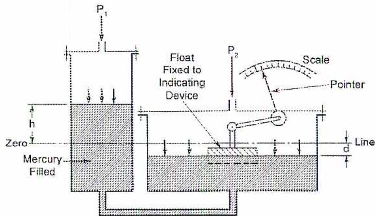
The diagram shows a U-tube manometer where the left leg is a large reservoir (well) and the right leg is a narrow tube. The reservoir is connected to pressure source \( P_1 \) and the narrow tube to \( P_2 \) . The reservoir contains mercury and a float. The float is connected to a mechanical linkage that moves a pointer across a curved scale. A horizontal line labeled 'Zero Line' indicates the initial mercury level. When pressure is applied, the mercury level in the reservoir drops by a distance \( h \) and in the tube rises by a distance \( d \) . The pointer's deflection is proportional to the differential pressure.
Figure 42
Mercury Filled Manometer
Another manometer technology for flow measurement is the bell-type manometer shown in Fig. 43. It has an inverted bell that is partially immersed in the sealing liquid. The high pressure connection is directed to the inside of the bell, and the low pressure connection is applied to its outer surface so that its vertical movement is a function of the differential pressure. A mechanical linkage on the top of the bell is used to position a pointer. This produces a compact unit which is better suited to field measurement devices and accurate for very small values of differential pressure than the conventional manometer configurations.
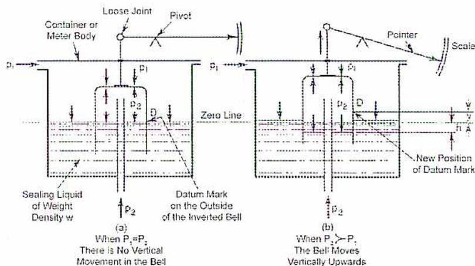
The diagram illustrates the operation of a bell-type manometer in two states. In state (a), when \( P_1 = P_2 \) , there is no vertical movement of the bell. The bell is partially immersed in a sealing liquid of weight density \( w \) . A datum mark on the outside of the bell is aligned with a zero line. In state (b), when \( P_2 > P_1 \) , the bell moves vertically upwards by a distance \( h \) . This movement shifts the datum mark to a 'New Position of Datum Mark'. A mechanical linkage consisting of a pivot and a loose joint translates this vertical movement into the angular deflection of a pointer on a scale.
Figure 43
Bell-Type Manometer
Typically, the radius of the outer container of a bell-type manometer is approximately 2.5 times that of the bell to ensure that the difference in liquid level inside and outside the bell is not enough to distort the differential pressure reading. A variation of this type of manometer is shown in Fig. 44. The pressure connections are reversed from the norm, and a spring is used as a balancing counter-force on the bell.
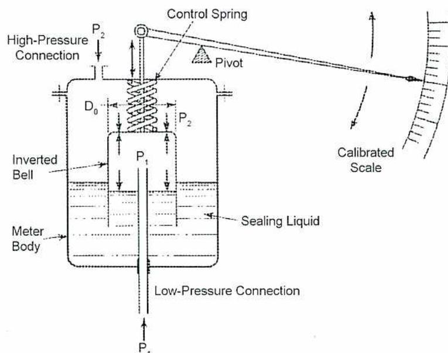
Figure 44
Spring Balanced Manometer
One challenge when using differential pressure measurement to measure flow is that the differential pressure and the flow rate are not linearly proportional. In fact, the flow rate is proportional to the square root of the differential pressure. This requires that the indicating mechanism be designed to modify its output to allow for square root extraction, or square root compensation, of the input signal.
Reviewing Bernoulli's Theory shows the reason for this requirement:
$$ H = h + \frac{P}{w} + \frac{v^2}{2g} \quad (\text{Formula 5}) $$
\( H \) , the total head, represents the differential pressure, and \( v \) is the fluid velocity which is directly and linearly proportional to the fluid flow rate, as long as the cross sectional area of the flow path is constant. Changes in "H" are thus proportional to changes in \( v^2 \) rather than in \( v \) .
The need for square root compensation cannot be ignored because power plant instrumentation and control circuits require input signals that have a linear relationship to their output in order to be effective. This principle is illustrated in Fig. 45 which shows a
pressure gauge (a) that is designed to display a square-root scale and another (b) with a linear scale ( i.e. square root compensated.) The scale increments on the square-root gauge increase as the indicated value increases. This makes the gauge inconvenient and difficult to use accurately especially for values in the lower end of its range. The effect on automated control systems is completely unacceptable.
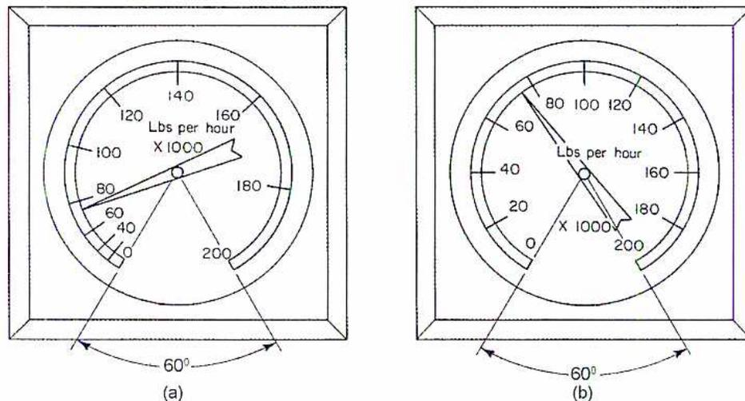
Figure 45
Flow Meter Gauges
The ring balance is a specialized type of manometer in which the two measuring legs are two sections of a hollow circular ring separated by an internal partition. The two pressure connections are flexible and are joined to the ring on either side of the partition. The ring itself is free to rotate around a central pivot point. Differential pressure causes the contained liquid to move from one side of the ring to the other creating a rotating moment which causes the ring to rotate away from the higher pressure. A counterweight is used to create an opposing moment, and when the two moments are in balance, motion stops.
The degree of rotation of the ring before equilibrium is reached indicates the magnitude of the differential pressure, and a pointer attached to the ring indicates movement on a scale which can be calibrated to indicate units of differential pressure or of fluid flow. Fig. 46 illustrates a ring balance instrument with an external scale and pointer. Fig. 47 shows a design with the scale and pointer contained within the centre of the ring.
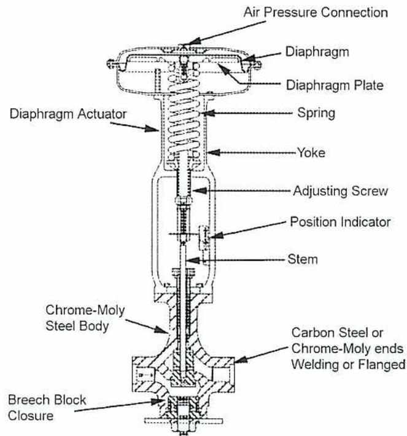
This diagram illustrates the internal structure of a ring balance. A central 'Fixed Beam' is pivoted on an 'Attached Fulcrum'. The beam is connected to a 'Hollow Annular Balance Ring' via 'Flexible Pressure Connections'. The ring is filled with 'Sealing Liquid'. A 'Partition' with an area 'A' is shown. The beam is counterbalanced by a 'Counter Weight' 'W'. The entire assembly is housed within a 'Scale' that has a radius 'R2'. The inner radius of the ring is 'R1'. The angle of deflection is labeled 'θ'. Various pressure points are indicated: 'Pc', 'Po', 'P1', 'P2', 'P3', 'P4', 'P5', 'P6'.
Figure 46
Ring Balance
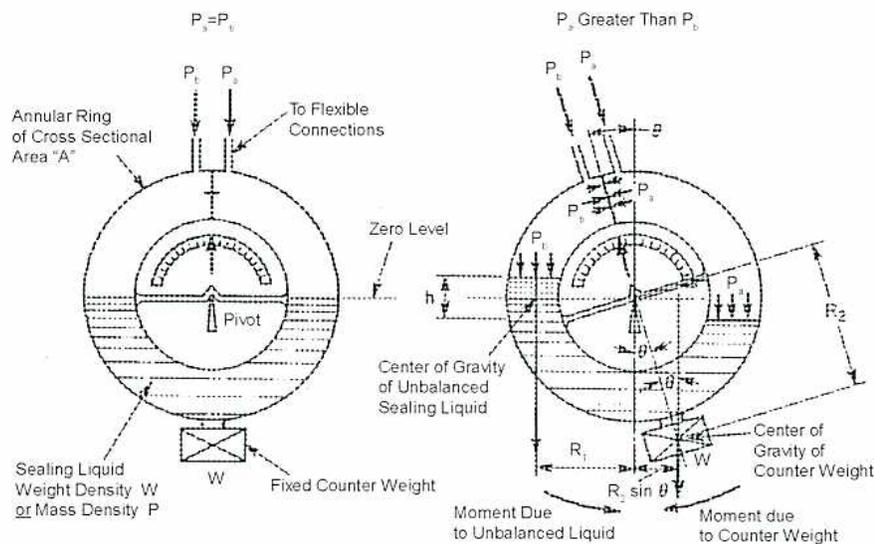
This diagram shows two states of the ring balance. The left side shows the equilibrium state where 'Pc = Po'. The right side shows an unbalanced state where 'Pc Greater Than Po', causing the beam to tilt at an angle 'θ'. Key components and labels include: 'Annular Ring of Cross Sectional Area "A"', 'To Flexible Connections', 'Pivot', 'Sealing Liquid Weight Density W or Mass Density P', 'Fixed Counter Weight W', 'Zero Level', 'h' (height of unbalanced liquid), 'Center of Gravity of Unbalanced Sealing Liquid', 'Moment Due to Unbalanced Liquid', 'R1 sin θ', 'Center of Gravity of Counter Weight', 'Moment due to Counter Weight', 'R2', 'R1'. The angle 'θ' is also shown in the equilibrium state.
Figure 47
Ring Balance
On a common type ring balance flowmeter, the counterweight is attached to a shaped cam, imparting a rotating moment to the cam. The cam's angular motion provides the output signal or indication, and the cam is shaped to give square root compensation needed for direct flow measurement.
Ring balance manometers are suited to low pressure measurements, usually 1 cm of water column or less, so they are widely used to indicate gas and air flow rates. They are accurate for gas flow applications but are rarely used for liquid flows. Ring balance devices are more common in European instrumentation use than they are in North America.
A force balance device is a transmitter which feeds back its output signal to balance the primary input signal received from the measuring element. The balanced output is maintained proportionally to the measured variable (in this case, fluid flow). One design of force balance unit is a bellows-type flowmeter shown in Fig. 48. In this device, two bellows are used back to back and either the high pressure or low pressure connection of a differential pressure primary measuring device supplies each one. The balanced output is conveyed through the motion take-off arm on the front of the device's case.
![Figure 48: Force Balance D.P. Transmitter. A detailed cross-sectional diagram of the internal mechanism of a force balance differential pressure transmitter. The diagram shows two bellows, 'High Pressure Bellows' on the left and 'Low Pressure Bellows' on the right, connected back-to-back. The high pressure side includes a 'High Pressure Tap', 'Restriction Ring', 'Center Stem Assembly', 'Zero Setting Screw', 'High Pressure Overload Seal', 'Range Spring Assembly', and 'Torque Tube Assembly'. The low pressure side includes a 'Low Pressure Tap', 'Low Pressure Bellows', 'Pulsation Dampering Adjustment', 'Cable Take-Off', 'Stabilizing Spring', 'Low Pressure Overload Seal', and 'Motion Take-Off Arm'. Additional 'Alternate Tap (H.P.)' and 'Alternate Tap (L.P.)' connections are shown at the bottom.](555df5c0300cb1fca5dc028fec5ec6be_img.jpg)
Figure 48
Force Balance D.P. Transmitter
A target type flowmeter is shown in Fig. 49. The fluid being measured exerts a force on a target plate which is a small circular disc. A small lever arm suspends the target plate in the centre of the fluid flow. The fluid deflects the target plate and a leaf spring provides a counterbalancing force. The lever arm is attached to a permanent magnet which is inside an angular motion sensor which produces an electrical output signal proportional to angular motion. The electrical output signal is used to indicate fluid flow rate. Advantages of this type of flowmeter are its suitability for liquids containing suspended particulate and its low pressure drop.
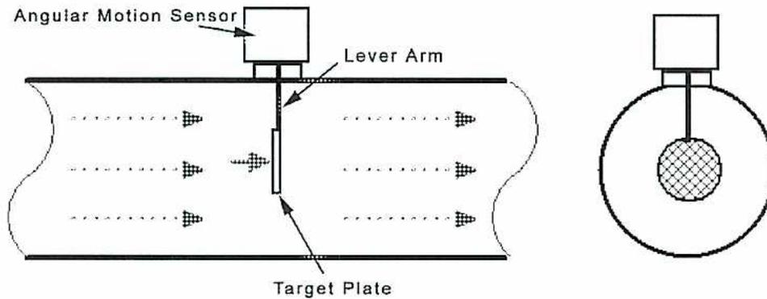
Figure 49
Target Type Flowmeter
Manometers can be used to generate electrical signals that are proportional to the measured fluid flow. This signal can then be used in a fluid flow control circuit as illustrated in Fig. 50. The manometer leg which is used for flow indication contains numerous vertical rods which are electrical conductors attached to resistance elements at their top end. About 100 rods are used, and they are arranged with varying lengths so that their electrical circuits are successively closed or opened as the mercury level rise or falls, respectively. The mercury level determines the amount of resistance in the circuit, and external bridge circuit that measures the conductance (the reciprocal of the resistance) determines the level. The conducting rods are placed so that their ends form a spiral which is contoured into a parabolic curve, so the output signal is square root compensated. The entire unit is filled with oil above the mercury level, so that the fluid measured does not contaminate the conducting rods.
![Figure 50: Electric Flow Indication. This schematic diagram shows a pipe line with flow indicated by an arrow. A manometer is connected to the pipe line, with one leg (P_a) connected to the pipe wall and the other leg (P_b) connected to a reservoir. The reservoir contains mercury at the bottom and oil above it. The oil-filled section contains approximately 100 conducting rods of varying lengths, arranged in a spiral formation. These rods are connected to a resistance element and a receiving instrument. The receiving instrument is connected to a 40-volt supply mains. The diagram also shows the flow of fluid through the pipe line and the connection points for the manometer legs.](df82d77a0d2637cbf2da9ea920a554fa_img.jpg)
Figure 50
Electric Flow Indication
Another type of electrical flow meter (Fig. 51) is the electromagnetic flow meter, often called a mag meter. The meter consists of a length of electrically insulated pipe, with two coils opposite each other, and a series of electrodes that are flush with the pipe's interior insulation lining. Energizing the coils produces a magnetic flux, and the moving liquid cuts the flux lines to generate a voltage which the electrodes detect. The external electronic circuitry conditions and amplifies the induced voltage, and a signal is produced which is proportional to fluid flow.
Advantages of this type of flow measurement are:
Disadvantages of this type of flow measurement are:
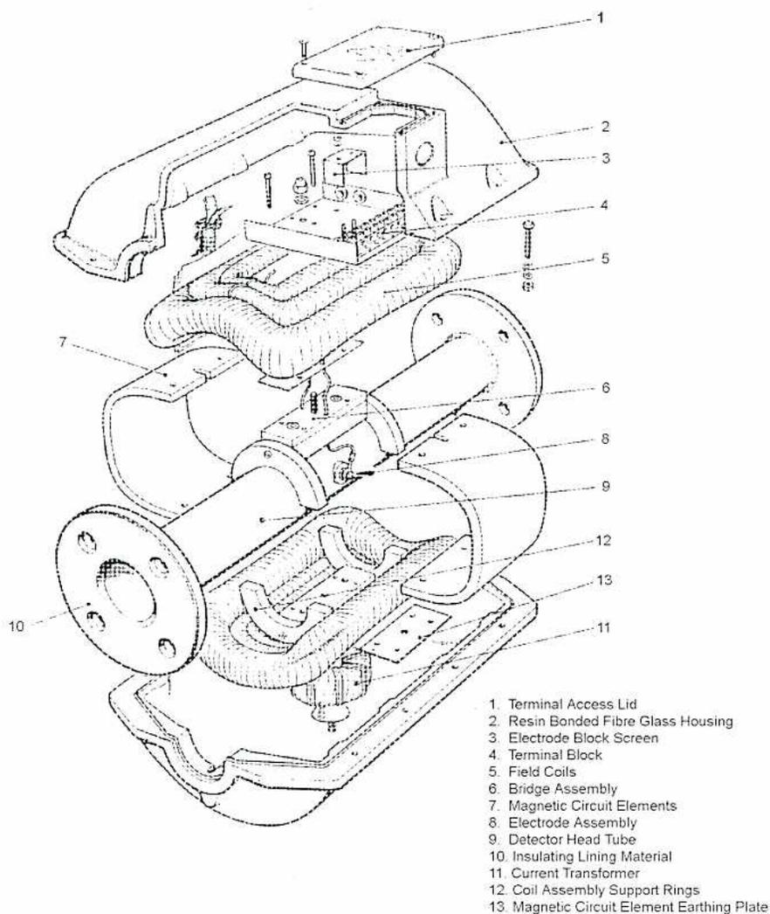
The diagram illustrates the internal structure of an electromagnetic flowmeter in an exploded perspective. The components are as follows:
Figure 51
Electromagnetic Flowmeter
A type of electrical flowmeter for measuring air and gas flows is the hot-wire anemometer. This consists of a platinum or tungsten wire which is heated by an electrical current. It is either maintained at a constant temperature or heated by a constant current. In either case, the wire forms part of an energized Wheatstone bridge circuit, and the amount of heat transferred is measured and used to indicate the fluid flow rate. The wire exposed to the gas temperature is contained within a small probe which is inserted into the gas stream. A typical probe is illustrated in Fig. 52.
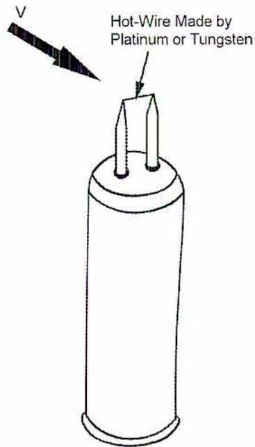
A schematic diagram of an anemometer probe. It consists of a vertical cylindrical handle. At the top of the handle, there is a small, V-shaped hot wire. An arrow labeled 'V' points towards the wire from the upper left. A label with a leader line pointing to the wire reads 'Hot-Wire Made by Platinum or Tungsten'.
Figure 52
Anemometer Probe
Hot-wire anemometers are expensive and somewhat fragile, so they are only used for flows of clean gas or air. Replacing the wire with a platinum film on a quartz fibre or hollow glass tube, or on a Pyrex glass wedge makes them more durable for liquid service. These advancements are shown in Fig. 53.
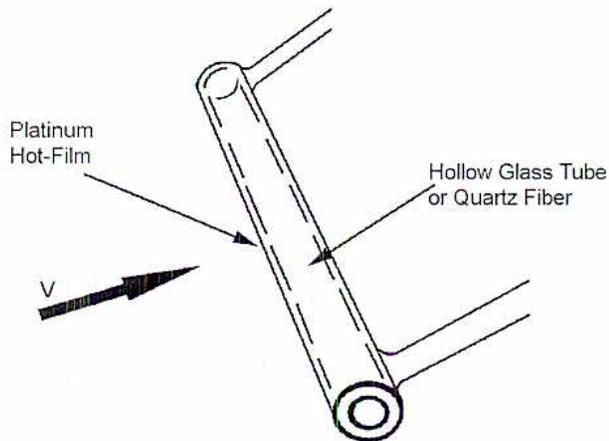
A schematic diagram of an anemometer probe. It features a hollow glass tube or quartz fiber tilted at an angle. A thin platinum hot-film is wrapped around the middle of the tube. An arrow labeled 'V' points towards the film from the lower left. Labels with leader lines identify the 'Platinum Hot-Film' and the 'Hollow Glass Tube or Quartz Fiber'. The base of the probe shows two electrical connection wires.
Figure 53
Anemometer
Describe the design, use, and placement of the following liquid level measurement devices: ball-float, displacement-type, hydrostatic head, electric and pneumatic level transmission, electric and magnetic type level-limit devices, and remote water-level indicators.
Accurate continuous measurement and control of the liquid level in a vessel is critically important for power engineers, for safe, efficient, and effective operation of boilers, process vessels, and many types of ancillary pressure vessels in the plant. A variety of devices are used.
Using the buoyancy of a float that follows the level of the liquid, a ball-float directly measures liquid level in a column. Liquid buoys a floating body with a force that is equal to the weight of the liquid displaced. A hollow ball used as a float provides a relatively large volume to maximize the buoyant force. The ball has a low mass so that the same force is easily moved vertically. The vertical movement of the float can be tracked with a mechanical linkage which alters the output or action of an external transmitter, recorder, or control device. A simple float level indicator is shown in Fig. 54. It uses a partially submerged float, balanced by a counterweight, to track the level of water in a tank.
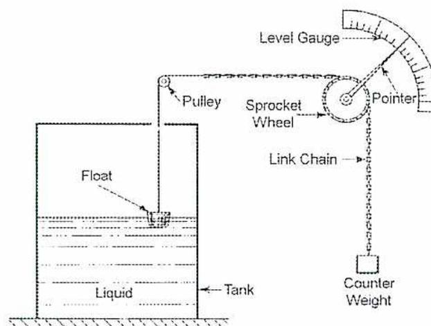
The diagram illustrates a mechanical float level indicator. On the left, a rectangular tank is shown, partially filled with liquid. A float is positioned on the liquid's surface. A link chain is attached to the float and extends vertically upwards. The chain passes over a pulley at the top of the tank and then down to a sprocket wheel. A counter weight is attached to the bottom of the chain. The sprocket wheel is connected to a pointer, which is currently pointing towards a curved level gauge on the right. The gauge has a scale with markings. The entire assembly is designed to translate the vertical movement of the float into a rotational movement of the pointer, indicating the liquid level.
Figure 54
Float Level Indicator
A common use of this principle is the float cage which is used in many power plants as a primary element for sensing water levels in process vessels and boiler drums. It is a small pressure vessel which is attached to the side of a drum or tank at the height of the desired water level. The cage is connected through upper and lower piping connections to the spaces above and below the liquid level of the vessel being monitored, so that the cage and vessel have the same level within them.
A float is contained within the cage and indicates the level from outside the vessel. Cages, located at different heights, contain floats that activate limit switches when raised or lowered to a certain level. This action provides functions such as high and low level alarms, start-stop control for a pump, or open-close for a control valve. A typical float cage is illustrated in Fig. 55, with the float and linkage displayed alongside.
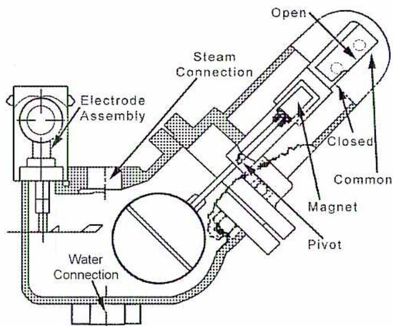
The diagram illustrates a float cage assembly. A large circular float is positioned within a U-shaped cage. The cage has a 'Steam Connection' at the top and a 'Water Connection' at the bottom. A linkage arm is attached to the float and extends upwards. This arm has a 'Pivot' point and a 'Magnet' at its end. The magnet interacts with an 'Electrode Assembly' located on the left. The assembly includes a switch mechanism with 'Open' and 'Closed' positions, and a 'Common' terminal. The entire assembly is shown in a cross-sectional view, with the float and linkage clearly visible within the cage structure.
Figure 55
Float Cage
In the ball float design, the displacement of liquid the float causes is constant, but a variable-displacement device is also possible. In this case, the float has a higher mass which outweighs the liquid being displaced. As a result, the buoyant force is not adequate to continually lift the float the same distance as the liquid level moves. Instead, the buoyant force varies as the liquid level changes, and the amount of liquid that is displaced changes with it. The float still moves vertically as the liquid level changes, but the amount it moves is much less, and the measuring device can be more compact. The added advantage is sensitivity to small changes. The disadvantage is that it does not produce an output force which is linearly proportional to the changes in liquid level. An example of the principle involved is shown in Fig. 56. The float is used to rotate an external tube, and the resulting angular motion provides a liquid level indication.
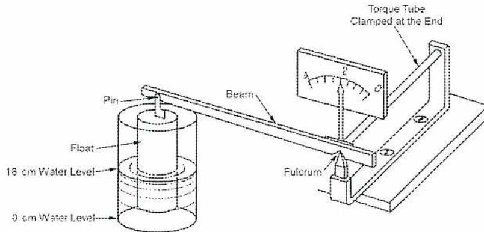
Figure 56
Variable-Displacement Device
Indirect measurement of liquid level in a vessel can be achieved by measuring the pressure at the bottom of the vessel. The pressure is a function of the height, or head, of the amount of liquid in the vessel. Mounting a pressure gauge at the bottom of a tank with its scale calibrated in units of liquid level is a simple way to achieve this. Protecting the gauge by using a sealing and transmitting medium, such as air or oil, in the piping between the measured liquid and the gauge increases the sensitivity of measurement. This is shown in Fig. 57. Liquid level changes in the tank produce fluctuations in the head pressure which the diaphragm at the bottom of the vessel senses. The diaphragm's flexing or relaxing motion causes alterations in the air pressure within the capillary tubing. The level indicator, which is a calibrated and scaled pressure gauge, indicates these alterations.
![Figure 57: Hydrostatic Head Device. A schematic diagram of a tank containing liquid up to a height 'h' above a 'Zero Line'. At the bottom of the tank, a 'Flexible Diaphragm' is shown. Above the diaphragm, the pressure is labeled P_h. A capillary tube is connected to the bottom of the tank, labeled 'Air in Capillary Tubing'. This tube leads to a 'Level Indicator' (a pressure gauge). An 'Alternative Installation' is shown where the capillary tube and diaphragm are located outside the tank, with the tube extending down to the bottom. The diagram also shows the liquid level and the zero line for reference.](844077b3034f0030b404207db0ad76b4_img.jpg)
Figure 57
Hydrostatic Head Device
Another arrangement is to maintain a regulated air pressure in a vertical open ended sensing line, slightly above the expected liquid head pressure, so that air is continuously
bubbling into the liquid. Adjusting the air pressure until air bubbles just become visible ensures that the sensing line pressure matches the liquid head above the end of the sensing line. The sensing tube is called a bubbler line or bubbler tube. This pressure is read from a calibrated and scaled pressure gauge or manometer, as shown in Fig. 58.
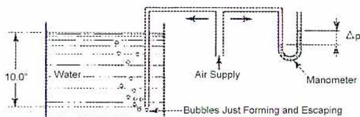
The diagram shows a tank containing water up to a height of 10.0'. A sensing tube (bubbler tube) is submerged in the water, with its tip at the bottom. Air is supplied from the top into the tube. Bubbles are shown forming and escaping from the tip of the tube. The air pressure is measured by a U-tube manometer connected to the air supply line. The manometer shows a differential pressure \( \Delta p \) between the air supply and the ambient atmosphere.
Figure 58
Bubbler Tube
The manometer in Fig. 58 measures a differential pressure and compares the tank liquid head to ambient atmospheric pressure. Differential pressure measurement is required in order to use a manometer when the vessel in question is a pressure vessel, for example, when measuring the level in a boiler steam drum. Comparing the pressure at the top of the tank or drum (steam space) with that at the bottom (water space) produces a differential pressure which is due to the head of the water level. This is shown in Fig. 59.
The sensing line, at the top of the vessel, is usually filled with liquid, and the scale is calibrated to allow for the extra head imposed on the chamber of the manometer. In the case of a boiler drum, this is an important requirement protecting the instrument from contact with steam. Placing a condensing pot, or small chamber, at the top of the sensing line allows the steam to condense protecting the instrument. The resulting condensate fills the sensing line. The steam side sensing line becomes a constant pressure line and the water side sensing line contains a variable pressure, dependent on water level.
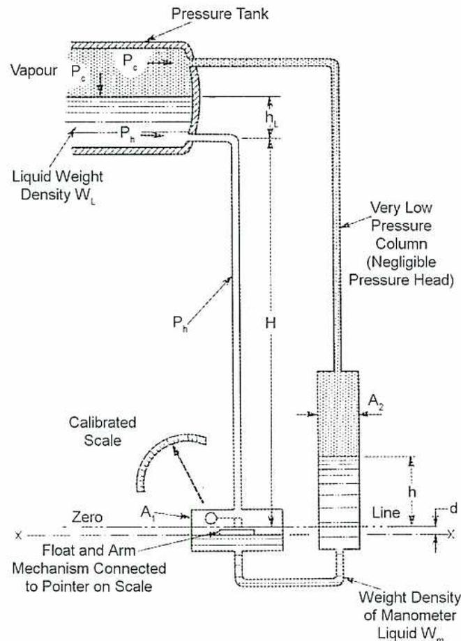
The diagram illustrates a level measurement manometer system. At the top, a 'Pressure Tank' contains 'Vapour' at pressure \( P_c \) and 'Liquid' with 'Weight Density \( W_L \) '. The liquid level is indicated by a height \( h_L \) . A pipe connects the bottom of the tank to a 'Calibrated Scale' mechanism. This pipe is labeled with pressure \( P_h \) . The 'Calibrated Scale' features a 'Zero' line and a 'Float and Arm Mechanism Connected to Pointer on Scale'. A second pipe, labeled 'Very Low Pressure Column (Negligible Pressure Head)', connects the top of the tank to a vertical column. This column contains a 'Weight Density of Manometer Liquid \( W_m \) '. The column has a cross-sectional area \( A_2 \) and a height \( h \) . The bottom of this column connects to the 'Calibrated Scale' mechanism at a point labeled 'Line'. The 'Calibrated Scale' also shows a cross-sectional area \( A_1 \) and a horizontal line labeled 'x'. Other dimensions shown include \( H \) and \( d \) .
Figure 59
Level Measurement Manometer
It should be noted that, as with other types of measuring instruments, any level indicating device can be used to generate an electrical signal for an automated control system, or for remote indications, by connecting its output to an electrical transmitter. Each type of primary measuring device described thus far which generates some form of mechanical motion as its output can have that motion applied to a transducer. Measuring a change in resistance, inductance, reluctance, or capacitance can transfer the mechanical motion into an equivalent and proportional electrical current or voltage.
When control circuits are electrical, it is often desirable to use a level measuring instrument which is fundamentally electrical rather than mechanical in its operation. One such device is the capacitance level gauge, as shown in Fig. 60.
This device has two electrodes, one inside the other, concentric electrode, and both are inserted vertically into the vessel containing the liquid to be measured. The liquid forms the dielectric between the two electrodes and creates a capacitor whose capacitance varies
as the liquid level rises and falls. An external Wheatstone bridge circuit measures the capacitance. The resulting output is used for level control and indication purposes.
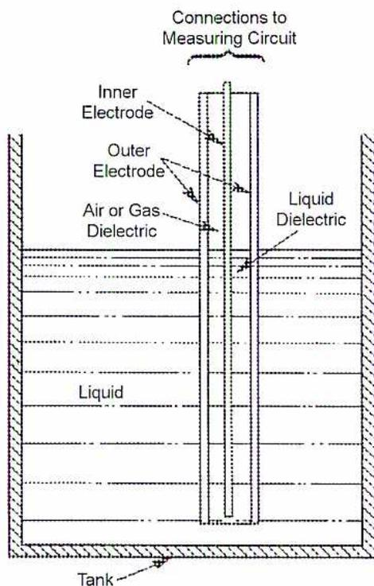
A cross-sectional diagram of a capacitance level gauge. A vertical cylindrical tank contains a liquid. Two concentric electrodes are positioned inside the tank: an "Inner Electrode" and an "Outer Electrode". The space between the electrodes is divided into two regions by the liquid level: the upper region is labeled "Air or Gas Dielectric" and the lower region is labeled "Liquid Dielectric". The top of the electrodes are connected to a "Measuring Circuit", indicated by a bracket. The bottom of the tank is labeled "Tank".
Figure 60
Capacitance Level Gauge
Another device that uses electrical conductivity to measure water level is the multi-probe conductivity column shown in Fig. 61. This is a water column which is attached to a boiler drum and contains a vertical row of probes or electrodes. As the water level rises and falls, each probe is covered or uncovered. When the probe is in water electricity is conducted across the electrodes of the probe. Connecting its electrical output to a relay allows each probe to provide an indication of level which can be used for remote indication and for control or alarm functions.
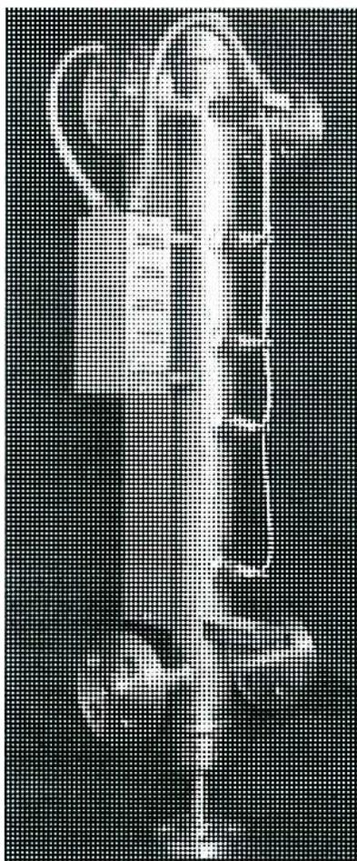
Figure 61
Multi-Probe Conductivity Column
Another type of electrical level measuring device is the nucleonic gauge. This device uses a radioactive source in a vertical strip along one side of a vessel and a strip of discrete measuring cells aligned on the opposite side. The intensity of beta or gamma radiation the measuring cells receives changes as the liquid level rises and falls because the liquid itself absorbs some of the radiation. Each measuring cell converts the radiation energy it receives directly into an electrical current which is amplified and used for external control or indication functions.
The main advantage of such a system is that no part of the device has to be in contact with the liquid measured. This means it is not susceptible to damage from high temperatures, high pressures, or corrosion, and to measuring problems due to liquid viscosity. Nucleonic gauges are often used with highly corrosive liquids. The main disadvantage is the need for complete shielding of the radioactive source to protect personnel in the vicinity. An example of such a device is shown in Fig. 62.
This diagram illustrates a nucleonic gauge for liquid level measurement. A vertical vessel contains a liquid up to a 'Material Level'. On the left side of the vessel, a 'Strip Source of Gamma Radiation' is held in a 'Shielding Source Holder'. Gamma rays are emitted from the source, passing through the vessel wall and the liquid. On the right side, 'Ohmart Measuring Cells' are positioned to detect the radiation. These cells are connected to an 'Amplifier', which in turn is connected to a 'Power Supply Indicator' and a meter. The meter's needle deflection indicates the liquid level based on the attenuation of the gamma rays.
Figure 62
Nucleonic Gauge
Liquid level can also be detected and electrically transmitted using an ultrasonic device, as shown in Fig. 63. A transmitter is used to send ultrasonic waves from the top of the vessel to the liquid surface, where they are reflected back and the receiver senses them. The distance the waves travel is a function of the liquid level, and determines the time delay between transmission and reception. This is used to indicate the level with considerable accuracy. An ultrasonic device has the same advantages as a nucleonic gauge, without the need for a radiation source.
This diagram shows an ultrasonic gauge setup. A 'Transmitter Receiver' unit is mounted at the top of a vessel. It sends an 'Ultrasonic Wave' (represented by a dashed line) down to the liquid surface, which is at a 'Level'. The wave is reflected back to the receiver. The receiver is connected to a 'Power Supply' and a 'Level Indicator and / or Recorder', which features a dial meter. The time delay between the transmitted and received signals is used to determine the liquid level.
Figure 63
Ultrasonic Gauge
Many automated control circuits are pneumatic, using compressed air as a medium for generating and detecting instrument signals that originate from field devices. Control circuits detect changes in a measured variable as changes in the air pressure within a length of instrument piping or tubing. A typical pneumatic transmitter, shown schematically in Fig. 64, is used to transmit a signal related to pressure as the process variable.
The transmitter in Fig. 64 has a bellows which expands or contracts dependent on changes in the input pressure. This movement adjusts the position of a pivoted arm called a flapper. Flapper movement changes the position of the flapper relative to the nozzle above the power amplifier which is supplied with a regulated pressure of instrument air.
As the flapper moves, more or less air is allowed to vent from the nozzle, and this adjusts the pressure supplied to the amplifier. The amplifier provides a pneumatic output signal in a suitable pressure range for the control system to use. This signal's pressure changes with the flapper movement and original input pressure. The feedback bellows, acted upon by the output pressure, repositions the flapper as needed to ensure that the output pressure is proportional to the input pressure.
The diagram illustrates the internal mechanism of a pneumatic transmitter. At the top left, an 'Input' line enters a 'Measuring Bellows'. This bellows is connected to a horizontal flapper arm. The flapper arm is pivoted on a central support. Below the flapper, an 'Air Supply' line enters a 'Power Amplifier' box. From the amplifier, a nozzle directs air towards the flapper. To the right of the flapper, a 'Feedback Bellows' is connected to the flapper arm. This bellows receives an 'Output' signal from the Power Amplifier. The feedback bellows's expansion or contraction pulls or pushes the flapper arm, adjusting its position relative to the nozzle to maintain a proportional relationship between input and output.
Figure 64
Pneumatic Transmitter
Fig. 65 shows a pneumatic transmitter which is specifically designed for liquid level indication and control. A float, contained within a column attached to a pressure vessel, is used to mechanically position the flapper. Once again, the feedback bellows repositions the flapper to ensure signal proportionality.
Figure 65
Pneumatic Transmitter for Liquid Level Indication
Many power plant control systems have a combination of electrical and pneumatic instruments. This may be due to the economics or availability of equipment added on over the years, or it may be a deliberate choice to take advantage of the merits of each type of system. For example, it may be desirable to utilize field devices that produce an electrical output to achieve the greatest sensitivity to changes in the measured variables but to use compressed air as the transmitting medium due to an existing instrument air network
Another scenario is a digital control system in a centralized control room that requires its output signals to be converted to a pneumatic form for use by air-operated control valves. In such cases, an intermediate device is needed which converts its input and proportional output between air pressure and electrical signals. Depending on whether the electrical signal must vary with current or with voltage, there are four possible combinations of such devices:
It is often necessary to detect whether a liquid level in a vessel is above or below a certain point rather than monitoring the level continuously throughout its range. Reasons for this include the following:
A system with a similar concept to the capacitance level gauge can control or incrementally indicate the liquid level. Electrodes are inserted vertically into the liquid. The circuit to which they are connected is electrically grounded to the vessel measured, and an external AC voltage source energizes it. The circuit is closed for each electrode as the liquid level rises to a point where it contacts the electrode. The circuit opens when the liquid level falls below this point. Multiple electrodes can be used at various depths to provide different functions. Fig. 66 illustrates this concept. It shows two electrodes that enable a start-stop type of control circuit for a pump based on the level within a sump that provides the pump suction.
The diagram illustrates a sump pump control system. A pump is located at the bottom of a sump, with its suction pipe leading up to a motor. The motor is connected to a relay, which is in turn connected to supply lines. Two electrodes (rods) are positioned vertically in the sump. The lower electrode is labeled 'Pump Starts' and the upper electrode is labeled 'Pump Stops'. The liquid level is indicated by a dashed line. The relay is also connected to a 'Ground or Hold On' terminal. The entire system is housed within a vessel, and the liquid is labeled 'Liquid Under Control'.
Figure 66
Sump Pump Control
This type of arrangement may use either capacitance or resistance of the probes to activate the relays. If capacitance is used, then the ground is often a horizontal plate mounted just above the liquid surface rather than the vessel itself or its attachments.
Nucleonic gauges are also well suited as level-limit devices because they inherently measure level in discrete increments rather than on a continuous scale. When used as level limits, they have only one or two measuring cells that produce a very robust and reliable device.
Ball-float and variable-displacement devices are often used for level-limiting purposes because they can be incorporated to have the float open or close a limit switch or similar device as the level reaches a certain minimum or maximum. A schematic of a deaerator which is fitted with ball-float cages for high and low level alarms is shown in Fig. 67.
The diagram shows a horizontal cylindrical deaerator tank. On the top left, there is a 'Water In' inlet pipe. Next to it is a 'Vent' pipe. On the top center, there is a 'Steam In' inlet pipe. On the bottom left, there is a 'Water Out' outlet pipe. On the right side of the tank, there are two ball-float cages, one above the other. Each cage has a float arm connected to a limit switch. The upper cage is labeled '123' and the lower cage is also labeled '123'. The liquid level is indicated by a wavy line inside the tank.
Figure 67
Deaerator Ball-Float Cages
Some level-limit devices use permanent magnets to provide both a limiting function and level indications. Such a device is shown in two versions in Fig. 68. The left hand version is intended for mounting on the side of a tank or drum and the right hand version is for mounting on the top. In both cases a float, used to track liquid level changes, contains a steel magnet which interacts with magnetic flakes inside the indicator column as it passes over them. The flakes are red on one side and blue on the other. They are placed adjacent to each other in a vertical plane in the column, with their width matching the width of the column's clear cover. The float magnet positions the flakes so that the column is all red above the indicated liquid level and all blue below it. Connections are also made for:
Figure 68
Magnetic Level Indications
Any type of transmitter that conveys a liquid level signal to a process control system is capable of providing an indication of water level in a vessel to a remote location, such as a centralized control room. In fact, level transmitters are used for dedicated indication and control signals. Control systems provide indications of their measured variables in parallel with their automated control functions. In addition, there are devices that are designed to provide a direct indication of water level in a vessel without interacting with any electrical or pneumatic control system. This is a particularly desirable function when dealing with level in a pressure vessel such as a boiler drum because safe operation depends on maintaining a proper level even when the process controls have failed, or when the control power supply has been lost.
Fig. 69 shows such a remote water-level indicating device. It is a diaphragm type of differential pressure device, with the two sides of the diaphragm connected to the steam and water spaces of a boiler drum, so that the diaphragm movement is proportional to changes in the hydrostatic head of the boiler water level. A condensing pot at the top of the steam side sensing line protects the diaphragm from steam contact so that both sensing lines are kept full of water at all times. The diaphragm's movement is conveyed mechanically to a vertical transmission shaft which repositions a horizontal reflecting shutter. The shutter divides a glass lens, similar in appearance to a water level gauge glass, into two sections or screens. The upper screen is illuminated by a red light, and the lower screen is illuminated by a blue light. The overall effect is similar to a lighted gauge glass with the steam side appearing red and the water side blue. This provides quick and easy identification of water level in the drum, even though no water is actually present
within the indicating glass. The transmission shaft can also be attached to linkage which opens or closes electrical contacts as the water level rises or drops excessively, so that remote high and low alarms are provided.
The diagram illustrates the Hopkins Remote Water-Level Indicator. At the top, a boiler drum is shown with its internal water level. A pipe connects the top of the drum to a condensing pot, with text indicating: "Constant Level Maintained by Condensation of Steam in This Chamber. Surplus Condensate Returns to Level of Water in Boiler". This pipe then extends downwards as a "Constant Head" line. Another pipe connects the side of the boiler drum to the remote unit as a "Variable Head" line. An "Equalising Pipe" is shown connecting these two lines, with a note: "Equalising Pipe Prevents Diaphragm from Being Subjected to Boiler Pressure on One Side Only". The remote unit contains a "Large Sensitive Diaphragm" at the bottom, balanced by a "Spring Balancing Difference in Heads". Above the diaphragm are two indicator lights: a "Red Light" and a "Blue Light".
Figure 69
Hopkinsons Remote Water-Level Indicator
Another remote water level device is shown in Fig. 70. This device is installed with a constant head steam side sensing line filled with water by a top-mounted condensing pot and a variable head water side sensing line. The differential pressure is an indicator of water level, and a vertical diaphragm within the device detects it. The diaphragm transmits its motion to a deflection plate, which is anchored at one end and fitted at the free end with a permanent horseshoe magnet.
The magnet's poles straddle a non-ferrous alloy tubular well that forms part of the housing. Inside the well is a spiral strip armature of magnetic material spindle-mounted on jewelled bearings. The outer end of the armature carries a counter-balanced pointer. The slight lateral movement of the magnet along the well is amplified through the rotation of the armature, and the resulting movement of the pointer indicates the changes in water level in the boiler.
The diagram illustrates the internal mechanism of a remote water level indicator. A central tubular well is shown, with a horseshoe magnet positioned to straddle it. Inside the well, a spiral strip armature is mounted on a spindle. This armature is connected to a pointer. A diaphragm is located at the top of the well. A contact and a deflection plate are also shown within the assembly. Two connections are indicated at the bottom: one to the bottom of the drum and another to a constant head chamber above the drum water level.
Figure 70
Remote Water Level Indication
If the level of a liquid other than water is required, consideration is given to the choice of measurement device used. Ball-float, displacement-type, and hydrostatic head devices are all sensitive to the specific gravity of the liquid measured because the specific gravity alters both the buoyant force and the total head that the liquid level produces. Therefore, the level measuring device is calibrated to allow for the specific gravity of the liquid. This is a particularly important step if it is a process liquid other than water. Process liquids, with high density or viscosity such as heavy oils or hydrocarbons, also affect displacement devices because the added fluid friction impedes the movement of the float.
Liquid level measurements are required in many locations in power plants. Their output signals are directed electrically to the indicating instruments and process control devices which may be a considerable distance away.
Describe the types, construction, and flow characteristics of control valves.
A process control system must contain a final control element . This device uses the control system's output signal to automatically produce some action that is intended to alter a measured variable usually with mechanical action. A final control element may be a damper, a variable speed drive for a feeder or other machine, an agitator, or any other type of controllable device. It is coupled with an operator that positions it as the automatic control circuitry requires. The most common type of final control element in industry is a control valve which is used to regulate fluid flow.
In some applications, a control valve is simply required to provide open or closed service, without any need to modulate the flow rate or regulate the fluid pressure. The operator then becomes an on/off control device. In this type of service, gate valves, ball valves, and butterfly valves are often used. The characteristics of the valves, and the rationale behind their selection, are the same as for any application of a manually operated valve for similar service.
More common is a need for a control valve to modulate its position, throttling the fluid it is controlling to maintain a set flow rate, pressure, temperature, or downstream or upstream liquid level. A common valve design for this service is the globe valve, illustrated in Fig. 71. In a globe valve, the fluid that passes through changes direction twice. The valve disc and seat are parallel to the main flow path reducing erosion on the valve parts and making the valve better suited to throttling service. A disadvantage of this design is that globe valves produce a much greater loss of velocity head due to their internal resistance to flow, and this loss is many times the equivalent loss for a gate valve of the same size. Globe valves can be difficult to open and close when fluid pressure is applied to them, and this limits their use to sizes below approximately 300 mm pipe diameter.
Figure 71
Globe Valve
Globe valves selected for control valve use often have a plug type disc which is a long tapered disc best suited for throttling service. Flat discs or conventional discs with a shorter taper are more prone to wear and wire drawing, so they are less commonly used. A cage type disc is often used with valve disc and seat trim that has a series of ports, or openings, on its side. This design minimizes the pressure drop and wire drawing that occurs as the valve closes against fluid pressure and also makes the valve easier to open and close. For many control valve designs, the internal trim is removable and replaceable with a variety of optional designs to customize the valve disc and seat configuration for various fluids, pressures, and application requirements. A selection of interchangeable Becker control valve cages for different purposes is shown in Fig. 72. Similarly, the valve bonnet is often available in a variety of interchangeable designs that are bolted to the valve body, to accommodate different designs of valve operators and to allow for different placement heights.
| Linear Opening | Equal Percentage | Quick Opening | Low-Noise Trim |
| Flow rate remains equal to the travel of the valve plug throughout the travel range. | For each incremental change of plug travel, flow capacity is increased by an equal percentage. | Sharp increase in flow capacity at low valve plug travel. Slow increases in flow capacity as valve reaches maximum valve plug travel. | Multiple apertures provide greater control over flowstream geometry. Effectively reduces turbulence and noise. |
Figure 72
Valve Cages
An advantage of globe valves for control valve service is that they can be designed for either downward or upward opening movement and accommodates valve operators that move in either direction. However, the direction of flow through a globe valve is pre-set to minimize the erosion and pressure drop. Care is taken to ensure that they are installed correctly in the pipework, with flow entering the valve on its inlet side. An arrow on the valve body indicates the direction of flow through the valve.
Shaft sealing for control valve stems is often a challenge because frequent adjustment and throttling of flow rather than just “open or closed” operation characterizes valve usage. Although control valves usually have conventional stuffing box shaft seals, using a variety of packing materials, there are other types of seals in use. Examples include bellows seals and other proprietary designs.
Most common valves for liquid service have a flow characteristic such that most of the increase in flow occurs with a relatively small initial opening of the valve, and globe valves follow this pattern. For a quick assessment of adjusted flow rates, it is often considered that the first 20% of valve opening results in the flow reaching 80% of maximum. This is a disadvantage when using a valve as a final control element because it is difficult to calibrate a control system to maintain process variables when relationships other than linear and square root exist. This problem can be largely offset with newer globe valve designs because the valve trim selected can be designed to provide a more linear relationship between valve stem travel and flow rate changes. Examples of flow characteristics for Becker globe-type control valves with various plug and cage choices are shown in Fig. 73. Fig. 74 illustrates the plugs for the flow characteristics shown in Fig. 73.
Quick-Change Cage®
Flow Characteristics
This graph illustrates the relationship between valve travel and flow rate for three different cage/plug designs. The x-axis represents 'Percent of Valve Travel' from 0 to 100, and the y-axis represents 'Percent of Maximum Flow' from 0 to 100.
| Percent of Valve Travel | Quick Opening (% Flow) | Linear (% Flow) | Equal Percentage (% Flow) |
|---|---|---|---|
| 0 | 0 | 0 | 0 |
| 10 | 25 | 10 | 2 |
| 20 | 45 | 20 | 5 |
| 30 | 62 | 30 | 8 |
| 40 | 75 | 40 | 12 |
| 50 | 85 | 50 | 18 |
| 60 | 92 | 60 | 28 |
| 70 | 96 | 70 | 42 |
| 80 | 98 | 80 | 62 |
| 90 | 99 | 90 | 85 |
| 100 | 100 | 100 | 100 |
Figure 73
Control Valve Flow Characteristics
The diagram shows three valve plug profiles:
Figure 74
Control Valve Plug Designs
Describe the design, operation, and application of the following valve operators: solenoid, pneumatic-diaphragm, power cylinder, and electric motor.
A control damper or valve is positioned as required. A valve operator is a device that receives its input signal from the control system and uses the signal to reposition the final control element. Most operator devices have their own internal processes to ensure that their mechanical output signal is proportional to the electrical or pneumatic control signal that they receive as an input or to amplify the electrical or pneumatic input into a proportional electrical output which has a greater magnitude. A pneumatic diaphragm positioner is an example of the mechanical output. An example of the amplification is a controller for an electric motor that is used as a valve positioner. If the operator directly uses its input energy to create a mechanical action, then it is called an actuator . An example is a solenoid positioner. In actual practice, the terms “operator” and “actuator” are interchangeable.
A solenoid is an electrical conductor which is wound into a spiral, or coil, to increase the magnetic field it generates when energized. The coil turns are placed adjacent to each other in a compact form, with an electrical insulating material separating them, and are arranged radially in several layers. Adjacent turns of the coil have their current travelling in the same direction, so the lines of magnetic flux generated are also in the same direction. The net effect is that the current flow is that of a single conductor, but the field generated is that of many conductors. The solenoid is, in effect, a tubular electromagnet.
A core, made of magnetic material, freely moves within the coil. When the coil is energized, a force is exerted along its length in one direction. A spring can be used at the end of its travel to return the core to its original position when the coil is de-energized. Energizing and de-energizing the solenoid moves the core back and forth axially. In industrial practice, the core of this device is a valve stem, and the solenoid becomes the operator for a valve which is opened and closed as electrical current is switched on and off. The direction of placement of the core relative to the polarity of the solenoid determines whether the solenoid opens or closes the valve when energized, so that both “normally open” and “normally closed” operations are possible. A solenoid valve uses the solenoid operation for a pilot valve, which admits compressed air to a spring-loaded plunger or piston, which is the valve stem for the main valve. In this way, a small coil is sufficient to initiate the operation of a larger valve. More operating force is applied by the instrument air system. A typical solenoid valve is illustrated in Fig. 75.
Solenoid valves provide an inexpensive, reliable, and simple means controlling valves that are required to open or close fully. They are restricted to smaller sizes, common in piping up to 30 mm and less common in sizes up to 150 mm. Applications include the following:
Figure 75
Solenoid Valve
Diaphragm operators have an air pressure signal applied to one side of a diaphragm with a spring on the opposite side counterbalancing the force. The diaphragm flexes until the forces are balanced. The air pressure the control system applies determines how much the diaphragm moves. When the air pressure is removed to allow the operator and valve to reverse their direction of travel, the diaphragm pressure is vented to atmosphere through a solenoid valve to facilitate free movement. The diaphragm is in contact with the valve stem and its linear movement is used to open or close the control valve, as needed. This is a common, reliable, and fairly inexpensive type of operator widely used for different applications and valve sizes. Fig. 76 shows a cutaway view of a diaphragm operator mounted on a globe valve.
![A detailed cross-sectional schematic of a globe valve with a diaphragm operator. The diagram shows the internal components of the valve assembly. At the top, an 'Air Pressure Connection' enters the 'Diaphragm Actuator'. Below the actuator is a 'Diaphragm' and a 'Diaphragm Plate'. A large 'Spring' is positioned below the plate, surrounded by a 'Yoke'. An 'Adjusting Screw' is located in the center of the yoke, connected to a 'Position Indicator' and a 'Stem'. The stem extends down through the 'Chrome-Moly Steel Body' to a 'Breech Block Closure' at the bottom. The bottom of the body is labeled 'Carbon Steel or Chrome-Moly ends Welding or Flanged'.](5f2c99ae08864cf2d5c949947bac2b98_img.jpg)
Figure 76
Globe Valve with Diaphragm Operator
A valve positioner is a high gain proportional controller. It is connected to the valve stem and measures the valve stem position. It compares the valve position to its setpoint (the output from the valve controller) and corrects the error. The main purpose for having a positioner guarantees the valve moves to the position where the controller wants it to be. A schematic of a positioner is shown in Fig. 77.
In this arrangement, the control signal is applied to a bellows which positions a flapper in relation to a nozzle. An increase in control signal pressure moves the flapper closer to the nozzle, causing the nozzle pressure to increase and the valve stem to move downward. As the valve stem moves downward, the flapper is moved away from the nozzle giving proportional action and stabilizing the valve movement. If valve stem movement is prevented due to friction or other causes, the nozzle pressure continues to increase until the resisting force is overcome.
A schematic diagram of a pneumatic positioner. At the top, an air supply line is labeled "140 kPa Air Supply". This line contains a "Restriction" and a "Nozzle". A "Flapper" is positioned near the nozzle. A "Control Signal" is applied to the flapper. The flapper is connected to a "Diaphragm", which is in turn connected to a "Valve Stem". The valve stem is shown with a downward arrow indicating its movement.
Figure 77
Positioner
Figure 78 shows a force balance positioner mounted on a control valve stem.
A detailed cross-sectional diagram of a force balance positioner mounted on a control valve. The diagram shows a "Spool Valve" at the top, which controls the flow of "Air Supply" and "Exhaust". A "Signal Diaphragm" is connected to the spool valve. A "3 - 15 PSIG Input Signal" is applied to the signal diaphragm. The signal diaphragm is connected to a "Feedback Spring". The feedback spring is connected to a "Positioner Cam", which is in turn connected to a "Control Valve Stem". The control valve stem is connected to a "Valve Actuator".
Figure 78
Positioner Mounted on a Control Valve
Cylinder type operators have an air pressure signal applied to one side of a piston in a cylinder. In some cases, a spring on the opposite side counterbalances the force. In other designs, the cylinder is double acting, and air pressure can be applied to either side to gain a positive motion in whichever direction is required. In either event, the side of the piston that is not pressurized is vented to atmosphere by a solenoid valve to allow free piston movement. The piston moves until the forces are balanced, and the air pressure the control system supplies determines the amount the piston moves. The piston is in contact with the valve stem, and its linear movement is used to open or close the control valve as needed.
A power cylinder valve operator provides a large output force, so it is commonly used for large valves or for valves which have to be moved against fluid pressure. It is also used for ball valves and butterfly valves, which require only enough linear movement to open or close them fully and do not need to be regulated or throttled.
Like diaphragm operators, power cylinder operators are pneumatic devices and require a pneumatic positioner. Fig. 79 shows a typical power cylinder valve operator and Fig. 80 shows a cylinder operator, and control valve assembly.
A perspective view of a power cylinder valve operator. It consists of a tall, rectangular metal frame with a top plate secured by four corner bolts. Inside the frame, a vertical rod is visible, connected to a central mechanism. The base of the operator is mounted on a flange.
Figure 79
Power Cylinder Operator
A schematic diagram of a power cylinder and control valve assembly. On the left, a control valve is shown in a horizontal pipe. Above the valve is a pneumatic positioner with four gauges. To the right, a power cylinder operator is mounted vertically on top of the control valve. An arrow points upwards inside the cylinder, indicating the direction of movement. The pipe is labeled 'Flow' with an arrow pointing to the right.
Figure 80
Power Cylinder and Control Valve
An electric control circuit is configured to provide on and off signals to a reversible electric motor controller. Using an intermediate gearbox that translates the motor's angular motion into the linear motion needed for the valve movement, the motor is used to open or close a valve. The simplicity of on/off control for the motor still provides good regulation of valve placement because the motor is started and stopped for just long enough to position the valve at whatever opening is needed. The arrangement is shown in Fig. 81.
It is imperative that the valve be equipped with protective devices that protect the motor from overloading and overheating in the event that friction or some other resistance obstructs the valve travel. The motor is de-energized if the valve overtravels protecting the motor. Usually, this protection is upper and lower limit switches that override the control circuit to shut the motor down when the valve travel reaches the top or bottom of its allowable range. A backup to the limit switch protection is a torque switch which sends a signal to shut down the motor when its output torque becomes excessive. An electric motor can provide a large output force, so it is commonly used for large valves. Electric motors are also useful for valves that require frequent adjustment in critical applications.
The diagram illustrates a cross-sectional view of a globe valve assembly. At the top, a rectangular box labeled 'Motor Operator' is connected to the valve's internal mechanism via a 'Gear Drive'. 'Electrical Connections' are shown entering the top of the motor operator. The gear drive is attached to a vertical 'Stem'. The stem extends down through the valve body and is connected to a 'Globe Valve Plug'. The plug is positioned to seat against a 'Seat' located within the 'Valve Body'. The valve body itself is shown with a flanged bottom section.
Figure 81
Electric Motor Valve Operator
B2.3